Chapter 2: The Relational Model & SQL¶
SQL is the one database skill every data job asks for. This chapter starts with the theory underneath — relations, tuples, domains and relational algebra — then teaches SQL hands-on: its sublanguages, SELECT, joins, aggregation, subqueries and recursive CTEs, window functions, NULL and three-valued logic, constraints, views and server-side code, and JSON. It closes with the SQL:2023 standard, how the main dialects differ, and the classic interview problems you should be able to solve.
2.1 The Relational Model: Relations, Tuples, Attributes and Domains¶
The relational model is the mathematical idea behind SQL databases. Data is held in relations (tables); each relation has attributes (columns) whose values come from domains (sets of allowed values), and its contents are a set of tuples (rows). Because everything is a table, any question can be answered by combining tables with a small set of operations.
Three vocabularies for the same thing
| Relational theory | SQL | Everyday | |
|---|---|---|---|
| The whole set | Relation | Table | File / sheet |
| One item | Tuple | Row | Record |
| One property | Attribute | Column | Field |
| Allowed values | Domain | Type + constraints | Valid entries |
| Number of columns | Degree (arity) | Column count | Width |
| Number of rows | Cardinality | Row count | Length |
Theory, SQL and everyday words name the same ideas.
Think of it like…
A relation is like a printed bus timetable: each column has a fixed meaning and type of value, each line is one journey, and the order of lines does not change what the timetable says.
Real-world example
At the fictional Brookfield College, the relation STUDENT(student_id, name, year) has attribute 'year' drawn from the domain {1, 2, 3, 4}. The tuple (2031, 'Lina Osei', 2) is one fact: 'student 2031 is Lina Osei in year 2'. Inserting year 7 violates the domain, and inserting a second tuple with student_id 2031 violates the key.
How it works¶
- Define domains: the sets of legal values, such as integers 1-4 or valid dates.
- Declare a relation schema: a name plus attributes, each tied to a domain.
- Fill the relation with tuples; each tuple states one true fact.
- Identify candidate keys — minimal attribute sets that are unique for every tuple.
- Query by combining relations with relational operators; every result is again a relation.
Who uses it
Computer-science students meet it in every databases module; database designers, query-optimiser developers and interviewers use its vocabulary.
Key takeaway
Memorise the term mapping — relation = table, tuple = row, attribute = column, domain = allowed values (data type plus rules), degree = number of columns, cardinality = number of rows.
Going deeper
- Formally a relation is a subset of the Cartesian product of its domains, so it has no duplicate tuples and no inherent order; SQL tables relax the first rule, allowing duplicates unless a key forbids them.
- Codd's model uses set semantics while SQL uses bag (multiset) semantics; this is why SQL needs DISTINCT and UNION versus UNION ALL, and why 'SELECT name FROM student' can return the same name twice.
- Values in a relation are atomic with respect to the DBMS's operators; modern SQL bends this with arrays, JSON and composite types, which theorists such as C. J. Date treat as legitimate domain types.
- In 1985 Codd published twelve rules (numbered 0-12, so actually thirteen) defining a 'fully relational' DBMS, including the information rule, guaranteed access, systematic NULL treatment and an online relational catalogue; no commercial product meets them all.
- The closed-world assumption says that a fact absent from a relation is false: if no row says Lina takes Chemistry, the database treats her as not taking it.
- Relational calculus (tuple and domain variants) is the declarative counterpart of relational algebra; Codd proved them equal in expressive power, and a language that can express every algebra query is called relationally complete.
Common mistakes & misconceptions
- Saying 'relational' means 'tables have relationships to each other': the name comes from the mathematical relation — the table itself.
- Assuming rows have a natural order: neither the model nor SQL guarantees any order without ORDER BY.
- Thinking a domain is just a data type: a domain can also carry rules, such as year BETWEEN 1 AND 4.
Try it: Declare a domain and a relation in PostgreSQL¶
CREATE DOMAIN year_of_study AS smallint CHECK (VALUE BETWEEN 1 AND 4);
CREATE TABLE student (
student_id integer PRIMARY KEY,
name text NOT NULL,
year year_of_study NOT NULL
);
INSERT INTO student VALUES (2031, 'Lina Osei', 2); -- ok
INSERT INTO student VALUES (2032, 'Sam Reid', 7); -- rejected by the domain
Key databases, concepts, languages, tools & standards¶
| Name | What it does | Example |
|---|---|---|
| Relation E. F. Codd, 1970 · Concept · Current · Beginner · Relational |
A named set of tuples sharing the same attributes — what SQL calls a table. | STUDENT(student_id, name, year) is a relation with three attributes. |
| Tuple Relational model · Concept · Current · Beginner · Relational |
An ordered set of attribute values forming one row of a relation and stating one fact. | (2031, 'Lina Osei', 2) is a tuple of STUDENT. |
| Attribute Relational model · Concept · Current · Beginner · Relational |
A named column of a relation whose values are drawn from one domain. | 'year' is an attribute of STUDENT with domain 1-4. |
| Domain Relational model; CREATE DOMAIN in ISO SQL · Concept · Current · Intermediate · Relational |
The set of permissible values for an attribute — a data type plus any rules restricting it. | CREATE DOMAIN uk_postcode AS text CHECK (VALUE ~ '^[A-Z0-9 ]{5,8}$'); |
| Degree (arity) Relational model · Concept · Current · Beginner · Relational |
The number of attributes in a relation. | STUDENT(student_id, name, year) has degree 3. |
| Cardinality (row count) Relational model · Concept · Current · Beginner · Relational |
The number of tuples in a relation at a given moment; it changes as rows are inserted and deleted. | STUDENT has cardinality 4,812 this term. |
| Relation schema vs instance Relational model · Concept · Current · Intermediate · Relational |
The schema is the relation's fixed definition; the instance is the set of tuples it holds right now. | STUDENT's schema stays the same all year while its instance grows each September. |
| Superkey Relational model · Concept · Current · Intermediate · Relational |
Any set of attributes whose values uniquely identify each tuple, possibly including unnecessary extras. | {student_id, name} is a superkey because student_id alone is already unique. |
| Candidate key Relational model · Concept · Current · Intermediate · Relational |
A minimal superkey: remove any attribute and it stops being unique. One is chosen as primary key. | Both student_id and national_insurance_no are candidate keys of STUDENT. |
| Closed-world assumption Database theory · Concept · Current · Advanced · Relational |
Anything not stated by a tuple in the database is assumed to be false. | No ENROLMENT row for Lina in Chemistry means she is not enrolled. |
| Codd's 12 rules E. F. Codd, Computerworld, 1985 · Standard · Legacy · Advanced · Relational |
Thirteen rules (0-12) defining what a truly relational DBMS must provide, from the information rule to non-subversion. | Rule 3 requires NULLs to be handled systematically, independent of data type. |
| Relational calculus E. F. Codd, 1972 · Language · Current · Advanced · Relational |
A declarative logic notation describing what result you want; tuple and domain variants exist. | { s.name | s ∈ STUDENT ∧ s.year = 2 } describes all second-year names. |
| Set vs bag semantics Relational theory vs ISO SQL · Concept · Current · Intermediate · Relational |
Pure relations are sets without duplicates; SQL tables and results are bags that may repeat rows. | SELECT year FROM student returns 4,812 rows; SELECT DISTINCT year returns 4. |
| The Third Manifesto C. J. Date and Hugh Darwen, 1995 onward · Resource · Current · Advanced · Relational |
A proposal for a 'truly relational' foundation without NULLs or duplicates, with Tutorial D as an example language. | Database theory courses use it to critique SQL's departures from the model. |
2.2 Relational Algebra and Set Operations¶
Relational algebra is a small set of operations that take tables in and give a table out: pick rows (selection), pick columns (projection), combine tables (join, product) and do set maths (union, difference, intersection). Every SQL query is translated into an algebra expression inside the database, and SQL's UNION, INTERSECT and EXCEPT are these set operations almost directly.
Think of it like…
It is like kitchen techniques for data: sieve (selection keeps some rows), slice (projection keeps some columns), mix (join) and compare two shopping lists (union, difference, intersection).
Real-world example
Brookfield College wants the names of second-year students taking Databases. In algebra that is π name ( σ year=2 (STUDENT) ⋈ σ course='Databases' (ENROLMENT) ). The college also wants students on either the chess or debating club list (UNION) and those on the chess list but not debating (EXCEPT).
How it works¶
- Start from base relations (tables).
- Apply σ (selection) to keep rows matching a condition.
- Apply ⋈ (join) or × (product) to combine relations.
- Apply π (projection) to keep the columns you need.
- Use ∪, ∩ and − to combine union-compatible results; the output is always a relation.
Who uses it
Database students, query-optimiser engineers and anyone reading EXPLAIN plans, which are trees of algebra-like operators.
Key takeaway
The minimal complete set is σ, π, ×, ∪, − and ρ (rename); join, intersection and division can all be built from them — a classic exam question.
Going deeper
- Codd defined the algebra in 1970-72; because every operator returns a relation (closure), operators nest freely, which is why SQL allows subqueries in FROM, WHERE and SELECT.
- Optimisers rewrite algebra using equivalence rules — pushing selections below joins, reordering joins, merging projections — then estimate costs of each physical plan; the internals chapter covers this cost-based optimisation.
- Set operations need union-compatible inputs: the same number of columns with compatible types, matched by position, not by name; the result takes column names from the first query.
- UNION removes duplicates (usually by sorting or hashing), so UNION ALL is faster when duplicates are impossible or wanted; INTERSECT ALL and EXCEPT ALL keep duplicate counts in PostgreSQL and other engines.
- Oracle historically spelled EXCEPT as MINUS (Oracle 21c and later also accept EXCEPT); MySQL gained INTERSECT and EXCEPT only in 8.0.31 (2022).
- Extended algebra adds γ (grouping and aggregation), outer joins, semi-joins (⋉) and anti-joins (▷), which correspond to SQL's GROUP BY, LEFT JOIN, EXISTS and NOT EXISTS.
Common mistakes & misconceptions
- Using UNION when UNION ALL is meant: the extra duplicate-removal step costs time and can silently drop legitimate repeated rows.
- Matching UNION columns by name: SQL matches them by position, so swapped columns produce wrong data without an error if types are compatible.
- Confusing selection (σ, rows — SQL's WHERE) with SQL's SELECT keyword, which actually performs projection (columns).
Try it: Selection, projection, join and set operations in SQL¶
-- π name ( σ year = 2 (student) ⋈ σ course = 'Databases' (enrolment) )
SELECT s.name
FROM student s JOIN enrolment e ON e.student_id = s.student_id
WHERE s.year = 2 AND e.course = 'Databases';
SELECT student_id FROM chess_club
UNION SELECT student_id FROM debating_club; -- in either
SELECT student_id FROM chess_club
INTERSECT SELECT student_id FROM debating_club; -- in both
SELECT student_id FROM chess_club
EXCEPT SELECT student_id FROM debating_club; -- chess only (Oracle: MINUS)
Key databases, concepts, languages, tools & standards¶
| Name | What it does | Example |
|---|---|---|
| Selection (σ) Relational algebra (Codd) · Concept · Current · Beginner · Relational |
Keeps only the tuples satisfying a condition; SQL expresses it in WHERE. | σ year = 2 (STUDENT) keeps second-year students. |
| Projection (π) Relational algebra · Concept · Current · Beginner · Relational |
Keeps only chosen attributes and, in pure algebra, removes duplicate tuples. | π name, year (STUDENT) is SELECT DISTINCT name, year FROM student. |
| Cartesian product (×) Relational algebra · Concept · Current · Beginner · Relational |
Pairs every tuple of one relation with every tuple of another; SQL's CROSS JOIN. | 4 sizes × 3 colours gives 12 product variants. |
| Join (⋈) Relational algebra · Concept · Current · Beginner · Relational |
A product followed by a selection on matching values; natural join matches all same-named attributes. | STUDENT ⋈ ENROLMENT pairs each student with their enrolments. |
| Theta join Relational algebra · Concept · Current · Intermediate · Relational |
A join whose condition uses any comparison (<, >, ≠, =), not only equality. | Match orders to price bands with order.total BETWEEN band.low AND band.high. |
| Rename (ρ) Relational algebra · Concept · Current · Intermediate · Relational |
Gives a relation or attribute a new name, needed for self-joins and clear results. | ρ manager(EMPLOYEE) lets EMPLOYEE be joined to itself; SQL uses aliases. |
| Union (∪) Relational algebra · Concept · Current · Beginner · Relational |
All tuples in either of two union-compatible relations, without duplicates. | Chess members ∪ debating members gives everyone in at least one club. |
| Set difference (−) Relational algebra · Concept · Current · Beginner · Relational |
Tuples in the first relation but not the second. | All students − students with enrolments = students taking no course. |
| Intersection (∩) Relational algebra · Concept · Current · Beginner · Relational |
Tuples present in both relations; derivable as R − (R − S). | Chess ∩ debating gives students in both clubs. |
| Division (÷) Relational algebra · Concept · Current · Advanced · Relational |
Finds tuples related to every tuple of another relation — 'for all' questions. | Students who have taken every compulsory module: ENROLMENT ÷ COMPULSORY. |
| Grouping and aggregation (γ) Extended relational algebra · Concept · Current · Intermediate · Relational |
Groups tuples by attributes and computes aggregates per group, matching SQL's GROUP BY. | γ year; COUNT(*) (STUDENT) counts students per year. |
| UNION vs UNION ALL ISO SQL · Command · Current · Beginner · Relational |
UNION removes duplicate rows from the combined result; UNION ALL keeps every row and is cheaper. | Combining 2025 and 2026 order tables with UNION ALL keeps all 3.1 million rows. |
| INTERSECT ISO SQL-92; MySQL since 8.0.31 · Command · Current · Beginner · Relational |
Returns rows produced by both queries. | Customers who bought in both January and February. |
| EXCEPT / MINUS ISO SQL-92 EXCEPT; Oracle MINUS · Command · Current · Beginner · Relational |
Returns rows from the first query that the second query does not produce. | Products listed in the catalogue EXCEPT products sold this year = slow movers. |
| Union compatibility Relational algebra and ISO SQL · Concept · Current · Intermediate · Relational |
Set operations need the same number of columns with compatible types, matched by position. | SELECT id, name UNION SELECT id, email works only because both second columns are text. |
| Closure property Relational algebra · Concept · Current · Intermediate · Relational |
Every operator returns a relation, so operations can be nested to any depth. | A join's output can feed a projection, whose output can feed a union. |
2.3 SQL's Sublanguages: DDL, DML, DCL and TCL¶
SQL (Structured Query Language) is really several mini-languages in one. DDL defines structure (CREATE, ALTER, DROP), DML reads and changes data (SELECT, INSERT, UPDATE, DELETE, MERGE), DCL controls who may do what (GRANT, REVOKE) and TCL controls transactions (BEGIN, COMMIT, ROLLBACK). SQL is declarative: you say what result you want, and the database works out how.
Think of it like…
Running a library: DDL builds and rearranges the shelves, DML adds, finds and removes books, DCL hands out library cards with different rights, and TCL is the checkout desk that finalises or cancels a transaction.
Real-world example
Developer Nia builds a stock system for the fictional Oak & Ember furniture shop. She runs CREATE TABLE products (DDL), loads 1,200 products with INSERT and adjusts prices with UPDATE (DML), lets the reporting role only read via GRANT SELECT (DCL), and wraps a stock transfer between warehouses in BEGIN … COMMIT (TCL).
How it works¶
- DDL: create schemas, tables, indexes and views; alter or drop them as needs change.
- DML: insert new rows, query with SELECT, update or delete existing rows, merge from staging data.
- DCL: grant and revoke privileges to roles and users.
- TCL: group DML into transactions and commit or roll back.
- Version every DDL change as a migration so environments stay in step.
Who uses it
Developers write DML daily; DBAs and platform engineers own most DDL and DCL; everyone touching production must understand TCL.
Key takeaway
Know the differences between DELETE (removes chosen rows, logged per row, can roll back), TRUNCATE (empties a whole table fast) and DROP (removes the table itself) — and that TRUNCATE is transactional in PostgreSQL and SQL Server but causes an implicit commit in MySQL and Oracle.
Going deeper
- PostgreSQL and SQL Server support transactional DDL — a failed migration of ten ALTER statements can be rolled back as one unit — whereas MySQL and Oracle commit implicitly around most DDL statements.
- MERGE (standardised in SQL:2003) inserts, updates or deletes target rows based on a source; PostgreSQL added it in version 15 and RETURNING support in 17, while MySQL offers INSERT … ON DUPLICATE KEY UPDATE instead.
- PostgreSQL's INSERT … ON CONFLICT DO UPDATE and SQLite's ON CONFLICT clause provide 'upserts' that are safe under concurrency, unlike a separate SELECT-then-INSERT.
- ALTER TABLE operations differ widely in cost: adding a nullable column is usually instant metadata, but changing a column type can rewrite every row and lock the table — big-table migrations are planned carefully or done online.
- SQL is declarative and set-based; procedural extensions (PL/pgSQL, T-SQL, PL/SQL) add loops and variables, but row-by-row loops are usually far slower than one set-based statement.
- Keywords are case-insensitive and statements end with a semicolon in most clients; unquoted identifiers are folded to lower case in PostgreSQL and to upper case in Oracle, a common source of 'table not found' errors.
Common mistakes & misconceptions
- Running UPDATE or DELETE without a WHERE clause — every row changes; run the WHERE as a SELECT first, or inside BEGIN so you can roll back.
- Assuming DDL can always be rolled back: in MySQL and Oracle a CREATE or ALTER commits the current transaction.
- Granting broad privileges (ALL, or superuser) to application accounts instead of only the needed SELECT, INSERT, UPDATE and DELETE.
Try it: One statement from each sublanguage (PostgreSQL)¶
-- DDL
CREATE TABLE products (sku text PRIMARY KEY, name text NOT NULL, price numeric(8,2));
-- DML
INSERT INTO products VALUES ('OAK-T1','Oak table',449.00), ('OAK-C1','Oak chair',89.00);
UPDATE products SET price = price * 1.05 WHERE sku LIKE 'OAK-%';
-- DCL
CREATE ROLE reporting;
GRANT SELECT ON products TO reporting;
-- TCL
BEGIN;
DELETE FROM products WHERE sku = 'OAK-C1';
ROLLBACK; -- the chair is still there
Key databases, concepts, languages, tools & standards¶
| Name | What it does | Example |
|---|---|---|
| SQL IBM (SEQUEL, 1974); ISO/IEC 9075 · Language · Current · Beginner · Relational |
Structured Query Language: the standard declarative language for defining, querying and controlling relational databases. | SELECT name FROM products WHERE price < 100; works on almost every relational database. |
| DDL (Data Definition Language) ISO SQL · Concept · Current · Beginner · Relational |
Statements that define or change database structure: CREATE, ALTER, DROP, TRUNCATE, RENAME. | ALTER TABLE products ADD COLUMN colour text; |
| DML (Data Manipulation Language) ISO SQL · Concept · Current · Beginner · Relational |
Statements that read or change data: SELECT, INSERT, UPDATE, DELETE and MERGE. | UPDATE products SET price = 99 WHERE sku = 'OAK-C1'; |
| DCL (Data Control Language) ISO SQL · Concept · Current · Beginner · Relational |
Statements that grant or revoke privileges on database objects to users and roles. | GRANT SELECT, INSERT ON orders TO app_writer; |
| TCL (Transaction Control Language) ISO SQL · Concept · Current · Beginner · Relational |
Statements that start, commit, roll back and mark points within transactions. | BEGIN; … SAVEPOINT s1; … ROLLBACK TO s1; … COMMIT; |
| CREATE TABLE ISO SQL DDL · Command · Current · Beginner · Relational |
Defines a new table's name, columns, data types and constraints. | CREATE TABLE warehouses (id int PRIMARY KEY, city text NOT NULL); |
| ALTER TABLE ISO SQL DDL · Command · Current · Beginner · Relational |
Changes an existing table: add, drop or rename columns, change types, add or drop constraints. | ALTER TABLE products ADD CONSTRAINT price_positive CHECK (price > 0); |
| DROP vs TRUNCATE vs DELETE ISO SQL and vendor docs · Concept · Current · Beginner · Relational |
DROP removes the table; TRUNCATE empties it quickly; DELETE removes chosen rows one by one, fully logged. | Empty a 40-million-row staging table with TRUNCATE, not DELETE, to finish in seconds. |
| INSERT ISO SQL DML · Command · Current · Beginner · Relational |
Adds new rows to a table, from literal values or from a SELECT. | INSERT INTO archive_orders SELECT * FROM orders WHERE placed < '2024-01-01'; |
| UPDATE ISO SQL DML · Command · Current · Beginner · Relational |
Changes column values in existing rows that match a condition. | UPDATE products SET price = price * 0.9 WHERE category = 'clearance'; |
| DELETE ISO SQL DML · Command · Current · Beginner · Relational |
Removes rows that match a condition; without WHERE it removes every row. | DELETE FROM sessions WHERE last_seen < now() - interval '30 days'; |
| MERGE ISO SQL:2003; PostgreSQL 15+, SQL Server, Oracle, Db2 · Command · Current · Intermediate · Relational |
Compares a source with a target and inserts, updates or deletes target rows in one statement. | Nightly MERGE applies the supplier price file to the products table. |
| Upsert (ON CONFLICT / ON DUPLICATE KEY) PostgreSQL and SQLite ON CONFLICT; MySQL ON DUPLICATE KEY UPDATE · Command · Current · Intermediate · Relational |
Inserts a row, or updates the existing one if a unique key already exists, atomically. | INSERT INTO page_views(url, n) VALUES ('/home', 1) ON CONFLICT (url) DO UPDATE SET n = page_views.n + 1; |
| GRANT and REVOKE ISO SQL DCL · Command · Current · Beginner · Relational |
Give or remove privileges such as SELECT, INSERT, UPDATE, DELETE or EXECUTE on objects. | REVOKE DELETE ON orders FROM app_writer; stops the app deleting orders. |
| BEGIN / START TRANSACTION ISO SQL START TRANSACTION; BEGIN in PostgreSQL, SQL Server, SQLite · Command · Current · Beginner · Relational |
Explicitly opens a transaction so several statements commit or roll back together. | START TRANSACTION; in MySQL before moving stock between two warehouses. |
| Transactional DDL PostgreSQL, SQL Server, SQLite; not MySQL or Oracle · Feature · Current · Intermediate · Relational |
Schema changes take part in transactions and can be rolled back with everything else. | A failed migration's ALTER and CREATE statements roll back cleanly in PostgreSQL. |
2.4 SELECT in Depth¶
SELECT is the statement for asking questions. You list the columns you want, name the tables in FROM, filter rows with WHERE, sort with ORDER BY and limit how many rows come back with LIMIT or FETCH FIRST. Although you write SELECT first, the database logically processes FROM and WHERE before SELECT, which explains many beginner errors.

Think of it like…
Writing a SELECT is like ordering from a catalogue: choose the catalogue (FROM), tick the conditions (WHERE), say which details to show (SELECT), how to sort them (ORDER BY) and how many to send (LIMIT).
Real-world example
The fictional streaming service Lumen wants its ten most-watched films released since 2020 that are suitable for children. The query reads FROM films, keeps rows WHERE release_year >= 2020 AND rating IN ('U','PG'), shows title and views, sorts ORDER BY views DESC and keeps FETCH FIRST 10 ROWS ONLY. A CASE expression labels each film 'hit' or 'niche' depending on views.
How it works¶
- FROM (and JOIN) assembles the source rows.
- WHERE removes rows that fail the condition.
- GROUP BY and HAVING form and filter groups (when used).
- SELECT computes output columns and aliases; DISTINCT removes duplicates.
- ORDER BY sorts; LIMIT/OFFSET or FETCH FIRST trims the result.
Who uses it
Everyone who uses a relational database — developers, analysts, data scientists, testers and support engineers — writes SELECT statements daily.
Key takeaway
Because WHERE is evaluated before SELECT, you cannot use a SELECT alias in WHERE (repeat the expression or use a subquery/CTE), but you can use it in ORDER BY.
Going deeper
- Logical order is about meaning, not execution: the optimiser may use an index to read rows already sorted, stop after ten rows, or push filters into joins, as long as the result matches the logical definition.
- Row-limiting syntax varies: LIMIT/OFFSET (PostgreSQL, MySQL, SQLite), TOP (SQL Server), and the standard FETCH FIRST n ROWS ONLY from SQL:2008, supported by PostgreSQL, Oracle 12c+, Db2 and SQL Server (with OFFSET).
- OFFSET pagination gets slower on deep pages because the database still reads and discards the skipped rows; keyset pagination (WHERE id > last_seen_id ORDER BY id LIMIT 20) stays fast at page 10,000.
- A predicate is 'sargable' when an index can be used: WHERE created_at >= '2026-01-01' can use an index on created_at, while WHERE EXTRACT(YEAR FROM created_at) = 2026 usually cannot without an expression index.
- Text comparisons, LIKE and ORDER BY depend on collation: case sensitivity and accent rules differ between MySQL's default utf8mb4_0900_ai_ci (case- and accent-insensitive) and PostgreSQL's usual case-sensitive collations.
- SELECT * is fine for exploration but harmful in application code: it returns unneeded columns, prevents index-only scans and breaks when columns are added or reordered.
Common mistakes & misconceptions
- Expecting a stable order without ORDER BY — the same query can return rows in a different order tomorrow.
- Paginating with ORDER BY on a non-unique column (such as created_at alone), which can repeat or skip rows between pages; add a unique tie-breaker like id.
- Writing WHERE col = NULL, which never matches; use IS NULL.
Try it: Filtering, CASE, sorting and limiting (PostgreSQL, SQLite or MySQL)¶
SELECT title,
views,
CASE WHEN views >= 1000000 THEN 'hit' ELSE 'niche' END AS popularity
FROM films
WHERE release_year >= 2020
AND rating IN ('U', 'PG')
AND title LIKE '%Dragon%'
ORDER BY views DESC, title
LIMIT 10; -- standard SQL: FETCH FIRST 10 ROWS ONLY
Key databases, concepts, languages, tools & standards¶
| Name | What it does | Example |
|---|---|---|
| SELECT list and aliases (AS) ISO SQL · Command · Current · Beginner · Relational |
Chooses and computes output columns; AS gives a column or expression a readable name. | SELECT price * qty AS line_total FROM order_lines; |
| FROM clause ISO SQL · Command · Current · Beginner · Relational |
Names the tables, views, subqueries or joins that supply rows to the query. | FROM films f JOIN genres g ON g.id = f.genre_id |
| WHERE clause ISO SQL · Command · Current · Beginner · Relational |
Filters rows before grouping, keeping only those for which the condition is TRUE. | WHERE release_year >= 2020 AND rating IN ('U','PG') |
| ORDER BY ISO SQL · Command · Current · Beginner · Relational |
Sorts the result by one or more expressions, ascending (ASC, default) or descending (DESC). | ORDER BY views DESC, title ASC |
| LIMIT and OFFSET PostgreSQL, MySQL, SQLite, DuckDB · Command · Current · Beginner · Relational |
Return at most n rows, optionally after skipping the first m. | LIMIT 20 OFFSET 40 shows page 3 of 20 results per page. |
| FETCH FIRST n ROWS ONLY ISO SQL:2008; PostgreSQL, Oracle 12c+, Db2, SQL Server · Command · Current · Intermediate · Relational |
The standard row-limiting clause; WITH TIES also keeps rows tied with the last one. | ORDER BY score DESC FETCH FIRST 3 ROWS WITH TIES returns 4 rows if two share third place. |
| TOP Microsoft SQL Server (T-SQL) · Command · Current · Beginner · Relational |
SQL Server's way of limiting rows, written right after SELECT. | SELECT TOP (10) title FROM films ORDER BY views DESC; |
| DISTINCT ISO SQL · Command · Current · Beginner · Relational |
Removes duplicate rows from the result. | SELECT DISTINCT country FROM customers; lists each country once. |
| CASE expression ISO SQL-92 · Command · Current · Beginner · Relational |
Returns different values depending on conditions — SQL's if-then-else inside a query. | CASE WHEN views >= 1000000 THEN 'hit' ELSE 'niche' END |
| LIKE and ILIKE ISO SQL LIKE; ILIKE in PostgreSQL · Command · Current · Beginner · Relational |
Pattern matching on text with % (any characters) and _ (one character); ILIKE ignores case. | WHERE email LIKE '%@example.org' |
| IN and BETWEEN ISO SQL · Command · Current · Beginner · Relational |
IN tests membership in a list; BETWEEN tests an inclusive range. | WHERE price BETWEEN 10 AND 20 AND size IN ('S','M') |
| CAST and type conversion ISO SQL CAST; PostgreSQL :: shorthand · Command · Current · Beginner · Relational |
Converts a value from one data type to another, explicitly. | CAST('2026-10-08' AS date) or '42'::int in PostgreSQL. |
| Logical query processing order ISO SQL semantics · Concept · Current · Intermediate · Relational |
The order in which clauses are conceptually evaluated: FROM, WHERE, GROUP BY, HAVING, SELECT, DISTINCT, ORDER BY, LIMIT. | Explains why 'WHERE line_total > 100' fails when line_total is a SELECT alias. |
| Keyset pagination Performance technique (also called seek method) · Pattern · Current · Intermediate · Relational |
Pages through results using the last seen key instead of OFFSET, keeping deep pages fast. | WHERE (created_at, id) < ($1, $2) ORDER BY created_at DESC, id DESC LIMIT 20 |
| Sargable predicate Query-tuning term (Search ARGument ABLE) · Concept · Current · Intermediate · Relational |
A condition written so the optimiser can use an index to satisfy it. | WHERE created_at >= '2026-01-01' is sargable; WHERE YEAR(created_at) = 2026 usually is not. |
2.5 Joins: Inner, Outer, Cross, Self, Semi and Anti¶
A join combines rows from two tables that belong together, usually because one table's foreign key matches the other's primary key. An inner join keeps only matching pairs; outer joins also keep unmatched rows, filling the gaps with NULL; a cross join pairs everything with everything; a self-join joins a table to itself; and semi- and anti-joins ask 'is there a match?' without returning the matched rows.
What each join returns
| Rows returned | Unmatched rows kept | |
|---|---|---|
| INNER JOIN | Matching pairs (7) | None |
| LEFT JOIN | Pairs + lonely customers (8) | Left side, NULL-filled |
| RIGHT JOIN | Pairs + lonely orders | Right side, NULL-filled |
| FULL OUTER JOIN | Pairs + both kinds | Both sides |
| CROSS JOIN | Every pair (5 × 7 = 35) | Not applicable |
| Semi-join (EXISTS) | Customers with ≥1 order (4) | None; each once |
| Anti-join (NOT EXISTS) | Customers with no order (1) | Only the unmatched |
Customers on the left, orders on the right; Ivo has no orders.
Think of it like…
Joining is like matching a class list with a list of signed permission slips: inner join lists pupils who have a slip; left join lists every pupil, with blanks where no slip came back; anti-join lists only those still missing a slip.
Real-world example
The fictional online bookshop Quillstone has 5 customers and 7 orders. An INNER JOIN of customers and orders gives 7 rows. A LEFT JOIN gives 8 rows, because customer Ivo has no orders and appears once with NULL order columns. A NOT EXISTS anti-join lists just Ivo, so marketing can send him a welcome discount.
How it works¶
- Choose the tables and the join condition, usually foreign key = primary key.
- Pick the join type based on which unmatched rows you need to keep.
- Write the condition in ON (or USING for same-named columns).
- Put filters on the outer table in WHERE, but filters on the optional table in ON.
- Check row counts: a join can multiply rows if the key is not unique on one side.
Who uses it
Joins are the core skill in every SQL interview and the most common operation in reporting, APIs and data pipelines.
Key takeaway
A filter on the right-hand table placed in WHERE silently turns a LEFT JOIN into an INNER JOIN, because NULL rows fail the condition — put that filter in the ON clause instead.
Going deeper
- A join on a non-unique key multiplies rows (fan-out): joining orders to order_lines and to payments at once can double-count totals, so aggregate each child table before joining or use separate subqueries.
- MySQL has no FULL OUTER JOIN (emulate it with a LEFT JOIN UNION a RIGHT JOIN), and SQLite added RIGHT and FULL OUTER JOIN only in version 3.39.0 (2022).
- Semi-joins (EXISTS, IN) return each left row at most once however many matches exist, which is why EXISTS is preferred over JOIN + DISTINCT for 'customers who have ordered'.
- NOT IN is a dangerous anti-join: if the subquery returns even one NULL, NOT IN yields no rows at all; NOT EXISTS or LEFT JOIN … WHERE right.key IS NULL behave as expected.
- LATERAL (SQL:1999; PostgreSQL, MySQL 8.0.14+, Oracle) and SQL Server's CROSS APPLY let a subquery in FROM refer to earlier tables — ideal for 'latest three orders per customer'.
- Physically, databases run joins with nested-loop, hash or merge algorithms chosen by the optimiser; the internals chapter explains when each wins.
Common mistakes & misconceptions
- Forgetting the join condition (or using old comma syntax without WHERE), creating an accidental Cartesian product of millions of rows.
- Filtering the optional side of a LEFT JOIN in WHERE, turning it into an inner join.
- Using NATURAL JOIN in production code: adding a same-named column like 'updated_at' later silently changes the join condition.
Try it: Inner, left and anti-join on the same data (any SQL database)¶
SELECT c.name, o.order_id
FROM customers c JOIN orders o ON o.customer_id = c.customer_id; -- inner
SELECT c.name, o.order_id
FROM customers c LEFT JOIN orders o ON o.customer_id = c.customer_id; -- keeps Ivo
SELECT c.name FROM customers c
WHERE NOT EXISTS (SELECT 1 FROM orders o WHERE o.customer_id = c.customer_id); -- anti-join
Key databases, concepts, languages, tools & standards¶
| Name | What it does | Example |
|---|---|---|
| INNER JOIN ISO SQL-92 · Command · Current · Beginner · Relational |
Returns only row pairs where the join condition is true in both tables. | customers JOIN orders ON orders.customer_id = customers.customer_id |
| LEFT OUTER JOIN ISO SQL-92 · Command · Current · Beginner · Relational |
Keeps every row from the left table, adding matched right rows or NULLs when none match. | Every product with its sales total, including products never sold. |
| RIGHT OUTER JOIN ISO SQL-92; SQLite since 3.39 · Command · Current · Beginner · Relational |
Keeps every row from the right table; usually rewritten as a LEFT JOIN for readability. | orders RIGHT JOIN customers … equals customers LEFT JOIN orders. |
| FULL OUTER JOIN ISO SQL-92; not in MySQL · Command · Current · Intermediate · Relational |
Keeps all rows from both tables, NULL-filling whichever side has no match. | Reconcile bank records with ledger entries, showing unmatched items on either side. |
| CROSS JOIN ISO SQL-92 · Command · Current · Beginner · Relational |
Pairs every row of one table with every row of another (Cartesian product). | sizes CROSS JOIN colours generates all 12 product variants. |
| Self-join Standard SQL technique · Pattern · Current · Intermediate · Relational |
Joining a table to itself under two aliases to relate rows in the same table. | employees e JOIN employees m ON e.manager_id = m.employee_id lists each person's manager. |
| Semi-join (EXISTS / IN) Relational algebra ⋉; SQL EXISTS and IN · Pattern · Current · Intermediate · Relational |
Returns rows from the first table that have at least one match, each only once. | Customers WHERE EXISTS (an order in the last 30 days). |
| Anti-join (NOT EXISTS) Relational algebra ▷; SQL NOT EXISTS · Pattern · Current · Intermediate · Relational |
Returns rows from the first table that have no match in the second. | Products WHERE NOT EXISTS (any order line) = products never sold. |
| ON clause ISO SQL-92 · Command · Current · Beginner · Relational |
Specifies the join condition; for outer joins it decides matching without removing outer rows. | LEFT JOIN orders o ON o.customer_id = c.customer_id AND o.status = 'paid' |
| USING and NATURAL JOIN ISO SQL-92 · Command · Current · Intermediate · Relational |
USING joins on listed same-named columns; NATURAL JOIN joins on all same-named columns automatically. | orders JOIN customers USING (customer_id) |
| Non-equi join Standard SQL technique · Pattern · Current · Intermediate · Relational |
A join whose condition uses ranges or inequalities rather than equality. | Join sales to tax_bands ON sale.amount BETWEEN band.min AND band.max. |
| LATERAL join / CROSS APPLY ISO SQL:1999 LATERAL; SQL Server CROSS/OUTER APPLY · Command · Current · Advanced · Relational |
A join where the right-hand subquery can reference columns of the left-hand row. | Each customer's three latest orders via LATERAL (… ORDER BY placed DESC LIMIT 3). |
| Join fan-out Query-correctness term · Concept · Current · Intermediate · Relational |
Row multiplication when a join key repeats, which inflates sums and counts if unnoticed. | Joining an order to 3 lines and 2 payments yields 6 rows; SUM(payment) doubles. |
| Implicit (comma) join Pre-SQL-92 style, still valid · Command · Legacy · Beginner · Relational |
Listing tables separated by commas in FROM with the join condition in WHERE. | FROM customers c, orders o WHERE o.customer_id = c.customer_id |
2.6 Aggregation: GROUP BY and HAVING¶
Aggregate functions boil many rows down to one value: COUNT, SUM, AVG, MIN and MAX. GROUP BY splits rows into groups first, so you get one result per group, such as total sales per shop. HAVING then filters those groups, the way WHERE filters individual rows.
Think of it like…
Aggregation is like a teacher sorting exam papers into piles by class (GROUP BY), counting and averaging each pile (aggregates), then only reporting piles whose average is below 50 (HAVING).
Real-world example
The fictional café chain Bean There has 2.4 million till rows for 2026. GROUP BY shop_id with SUM(amount) gives one revenue line per shop for its 38 shops. Adding HAVING SUM(amount) < 200000 shows the six under-performing shops. ROLLUP adds subtotals per region and a grand total in the same query.
How it works¶
- WHERE removes rows you do not want before grouping (e.g. refunds).
- GROUP BY puts the remaining rows into buckets by one or more columns.
- Aggregate functions compute one value per bucket.
- HAVING keeps only buckets that meet a condition on the aggregates.
- SELECT may only show grouping columns and aggregates; ORDER BY sorts the groups.
Who uses it
Analysts, BI developers and data engineers aggregate constantly; developers use it for dashboards, counters and reports.
Key takeaway
WHERE filters rows before grouping and cannot use aggregates; HAVING filters groups after grouping and can — a top-five SQL interview question.
Going deeper
- COUNT(*) counts rows; COUNT(column) counts non-NULL values; COUNT(DISTINCT column) counts different non-NULL values — on a table with missing emails these three give three different numbers.
- SUM, AVG, MIN and MAX ignore NULLs, and SUM over zero rows returns NULL rather than 0; wrap it in COALESCE(SUM(x), 0) for reports.
- Standard SQL requires every non-aggregated SELECT column to appear in GROUP BY unless it is functionally dependent on the grouping key (SQL:1999); MySQL enforces this with ONLY_FULL_GROUP_BY, on by default since 5.7.
- GROUPING SETS, ROLLUP and CUBE (SQL:1999) compute several groupings in one pass; the GROUPING() function tells subtotal rows apart from real NULLs.
- Ordered-set aggregates such as PERCENTILE_CONT(0.5) WITHIN GROUP (ORDER BY amount) compute medians; string aggregation is STRING_AGG in PostgreSQL and SQL Server, LISTAGG in Oracle and Db2, GROUP_CONCAT in MySQL and SQLite.
- SQL:2023 standardised ANY_VALUE(), which returns an arbitrary value from each group — useful when a column is the same throughout the group but not in GROUP BY.
Common mistakes & misconceptions
- Putting an aggregate condition in WHERE (WHERE SUM(amount) > 100) — it is an error; use HAVING.
- Averaging averages: the mean of shop averages is not the overall average when shops have different numbers of sales; compute SUM/COUNT over the base rows.
- Using COUNT(column) when you meant COUNT(*), silently skipping rows where that column is NULL.
Try it: Totals per shop, filtered groups and subtotals (PostgreSQL)¶
SELECT region, shop_id,
COUNT(*) AS sales,
SUM(amount) AS revenue,
ROUND(AVG(amount), 2) AS avg_ticket,
COUNT(*) FILTER (WHERE amount > 20) AS big_sales
FROM till
WHERE sold_at >= '2026-01-01' AND NOT is_refund
GROUP BY ROLLUP (region, shop_id)
HAVING SUM(amount) > 0
ORDER BY region, shop_id;
Key databases, concepts, languages, tools & standards¶
| Name | What it does | Example |
|---|---|---|
| COUNT ISO SQL aggregate · Command · Current · Beginner · Relational |
COUNT(*) counts rows; COUNT(expr) counts non-NULL values; COUNT(DISTINCT expr) counts different values. | SELECT COUNT(DISTINCT customer_id) FROM orders; counts unique buyers. |
| SUM and AVG ISO SQL aggregates · Command · Current · Beginner · Relational |
Add up or average numeric values in a group, ignoring NULLs. | SELECT shop_id, SUM(amount), AVG(amount) FROM till GROUP BY shop_id; |
| MIN and MAX ISO SQL aggregates · Command · Current · Beginner · Relational |
Return the smallest and largest values in a group; work on numbers, dates and text. | SELECT MIN(sold_at), MAX(sold_at) FROM till; shows the data's date range. |
| GROUP BY ISO SQL · Command · Current · Beginner · Relational |
Splits rows into groups sharing the same values so aggregates are computed per group. | GROUP BY region, shop_id gives one row per shop within each region. |
| HAVING ISO SQL · Command · Current · Beginner · Relational |
Filters groups after aggregation using conditions on aggregate values. | HAVING COUNT(*) >= 5 keeps customers with at least five orders. |
| GROUPING SETS ISO SQL:1999 · Command · Current · Advanced · Relational |
Computes several different groupings in one query, as if UNION ALL of separate GROUP BYs. | GROUP BY GROUPING SETS ((region), (product), ()) gives region totals, product totals and a grand total. |
| ROLLUP ISO SQL:1999 · Command · Current · Intermediate · Relational |
Produces hierarchical subtotals from right to left plus a grand total. | GROUP BY ROLLUP (year, month) adds yearly subtotals and an overall total. |
| CUBE ISO SQL:1999 · Command · Current · Advanced · Relational |
Produces subtotals for every combination of the listed columns. | GROUP BY CUBE (region, product) gives 4 levels of totals. |
| FILTER clause ISO SQL:2003; PostgreSQL, SQLite, DuckDB · Command · Current · Intermediate · Relational |
Restricts which rows feed one aggregate, enabling several conditional counts in one pass. | COUNT(*) FILTER (WHERE status = 'late') AS late_orders |
| Conditional aggregation Portable SQL technique · Pattern · Current · Intermediate · Relational |
Using CASE inside an aggregate to count or sum only certain rows; works in every dialect. | SUM(CASE WHEN channel = 'web' THEN amount ELSE 0 END) AS web_revenue |
| STRING_AGG / LISTAGG / GROUP_CONCAT PostgreSQL & SQL Server / Oracle & Db2 / MySQL & SQLite · Command · Current · Intermediate · Relational |
Concatenates text values from a group into one string with a separator. | STRING_AGG(product_name, ', ' ORDER BY product_name) lists an order's items. |
| PERCENTILE_CONT and medians ISO SQL:2003 ordered-set aggregate · Command · Current · Advanced · Relational |
Computes a continuous percentile such as the median over an ordered group. | PERCENTILE_CONT(0.5) WITHIN GROUP (ORDER BY delivery_minutes) gives the median delivery time. |
| ANY_VALUE ISO SQL:2023; MySQL, BigQuery, Snowflake, PostgreSQL 16+ · Command · Emerging · Intermediate · Relational |
Aggregate returning any one value from the group, for columns constant within each group. | SELECT customer_id, ANY_VALUE(customer_name) … GROUP BY customer_id |
| ONLY_FULL_GROUP_BY MySQL SQL mode (default since 5.7) · Feature · Current · Intermediate · Relational |
Rejects queries selecting non-grouped columns that are not functionally dependent on the GROUP BY key. | SELECT shop_id, city, SUM(amount) … GROUP BY shop_id errors unless city depends on shop_id. |
2.7 Subqueries, CTEs and Recursive Queries¶
A subquery is a query inside another query, used as a value, a list or a temporary table. A correlated subquery refers to the outer row, so it is logically re-run for each row. Common table expressions (CTEs), written with WITH, give subqueries names so long queries read top to bottom, and recursive CTEs can walk hierarchies like org charts and category trees.

Think of it like…
Subqueries are like asking a colleague a quick side-question while writing a report; a CTE is writing each side-question's answer on a labelled sticky note first; a recursive CTE is asking 'and who reports to them?' again and again until nobody is left.
Real-world example
HR at the fictional engineering firm Kestrel Labs wants staff earning more than their department's average — a correlated subquery compares each employee to AVG(salary) of their own department. Then they want everyone under the CTO, Grace, at any depth: a recursive CTE starts from Grace (anchor) and repeatedly joins employees whose manager_id is in the previous level, finding all 140 people in five levels.
How it works¶
- Write the inner question first and test it on its own.
- Decide its role: a single value (scalar), a list (IN/EXISTS) or a table (FROM or WITH).
- For readability, name pieces as CTEs: WITH a AS (…), b AS (…) SELECT …
- For hierarchies, write WITH RECURSIVE: an anchor query UNION ALL a recursive step.
- Add a depth limit or cycle check, and confirm the plan with EXPLAIN.
Who uses it
Analysts and analytics engineers write CTE-heavy SQL daily (dbt models are mostly CTEs); developers use recursive CTEs for trees, threads and bills of materials.
Key takeaway
Every recursive CTE needs three parts — anchor, UNION ALL, recursive member — and a termination condition; interviewers love 'list all reports of a manager' and 'generate a calendar of dates'.
Going deeper
- A correlated subquery is defined as running once per outer row, but optimisers often decorrelate it into a join or semi-join; when they cannot, a 1-million-row outer table can mean a million inner executions.
- Since PostgreSQL 12, non-recursive CTEs referenced once are inlined into the main query; write AS MATERIALIZED to force a one-off computed result or AS NOT MATERIALIZED to force inlining (before 12 they were always materialised optimisation fences).
- Recursive CTEs arrived in SQL:1999; MySQL added them in 8.0 (2018) and SQLite in 3.8.3 (2014); SQL Server uses WITH without the RECURSIVE keyword and caps recursion at 100 levels unless OPTION (MAXRECURSION n) is set.
- SQL:1999's SEARCH and CYCLE clauses (implemented in PostgreSQL 14) produce depth-first or breadth-first ordering and detect loops, which matters in graphs where A follows B follows A.
- Oracle's older CONNECT BY PRIOR syntax predates recursive CTEs and is still common in Oracle code bases; Oracle also supports the standard recursive WITH since 11g Release 2.
- PostgreSQL allows data-modifying CTEs — WITH moved AS (DELETE … RETURNING *) INSERT INTO archive SELECT * FROM moved — moving rows between tables atomically in one statement.
Common mistakes & misconceptions
- Writing a recursive CTE without a stop condition over cyclic data, which loops until it hits a recursion limit or runs out of memory.
- A scalar subquery that returns more than one row causes a runtime error — make sure it is keyed or aggregated.
- Using NOT IN (subquery) when the subquery can return NULL; use NOT EXISTS instead.
Try it: Correlated subquery and recursive org chart (PostgreSQL, SQLite, MySQL 8+)¶
-- above their department's average
SELECT e.name, e.salary
FROM employees e
WHERE e.salary > (SELECT AVG(salary) FROM employees x WHERE x.dept_id = e.dept_id);
-- everyone under Grace (employee 1), with depth
WITH RECURSIVE chain AS (
SELECT employee_id, name, 0 AS depth FROM employees WHERE employee_id = 1
UNION ALL
SELECT e.employee_id, e.name, c.depth + 1
FROM employees e JOIN chain c ON e.manager_id = c.employee_id
WHERE c.depth < 20
)
SELECT * FROM chain ORDER BY depth, name;
Key databases, concepts, languages, tools & standards¶
| Name | What it does | Example |
|---|---|---|
| Scalar subquery ISO SQL · Concept · Current · Intermediate · Relational |
A subquery returning exactly one value, usable anywhere a single value is allowed. | SELECT name, (SELECT COUNT(*) FROM orders o WHERE o.customer_id = c.id) FROM customers c; |
| IN (subquery) ISO SQL · Command · Current · Beginner · Relational |
Tests whether a value appears in the set of values a subquery returns. | WHERE product_id IN (SELECT product_id FROM recalls) |
| EXISTS ISO SQL · Command · Current · Intermediate · Relational |
True if a subquery returns at least one row; stops at the first match. | WHERE EXISTS (SELECT 1 FROM orders o WHERE o.customer_id = c.id) |
| Correlated subquery ISO SQL · Concept · Current · Intermediate · Relational |
A subquery that references columns of the outer query, so it is evaluated per outer row. | Employees earning above the average of their own department. |
| Derived table ISO SQL (subquery in FROM) · Concept · Current · Intermediate · Relational |
A subquery in the FROM clause that acts as a temporary, unnamed table. | SELECT * FROM (SELECT shop_id, SUM(amount) t FROM till GROUP BY shop_id) s WHERE t > 1e5; |
| ANY / SOME / ALL ISO SQL quantified comparisons · Command · Current · Advanced · Relational |
Compare a value against every value a subquery returns: true for any match, or only if true for all. | WHERE price > ALL (SELECT price FROM products WHERE brand = 'Budget') |
| Common table expression (WITH) ISO SQL:1999 · Command · Current · Intermediate · Relational |
A named subquery defined before the main query, making complex SQL readable and reusable within it. | WITH monthly AS (SELECT …) SELECT * FROM monthly WHERE revenue > 50000; |
| Recursive CTE (WITH RECURSIVE) ISO SQL:1999; MySQL 8.0+, SQLite 3.8.3+ · Command · Current · Advanced · Relational |
A CTE that refers to itself, repeatedly adding rows to walk trees, graphs or generate series. | Find all subcategories of 'Garden' in a category tree of any depth. |
| Anchor and recursive member ISO SQL recursive query structure · Concept · Current · Advanced · Relational |
The starting query and the self-referencing query joined by UNION ALL in a recursive CTE. | Anchor selects the CEO; the recursive member joins employees whose manager is in the previous level. |
| SEARCH and CYCLE clauses ISO SQL:1999; PostgreSQL 14+ · Command · Current · Advanced · Relational |
Add depth-first or breadth-first ordering and loop detection to recursive CTEs. | CYCLE id SET is_cycle USING path stops endless follow-loops in a social graph. |
| MATERIALIZED / NOT MATERIALIZED CTE PostgreSQL 12+ · Feature · Current · Advanced · Relational |
Hints controlling whether a CTE is computed once and stored or inlined into the main query. | WITH big AS MATERIALIZED (…) computes an expensive aggregate only once. |
| CONNECT BY Oracle Database (proprietary) · Command · Legacy · Advanced · Relational |
Oracle's older syntax for hierarchical queries using START WITH and PRIOR. | SELECT name FROM emp START WITH mgr IS NULL CONNECT BY PRIOR empno = mgr; |
| Data-modifying CTE PostgreSQL · Feature · Current · Advanced · Relational |
A CTE containing INSERT, UPDATE or DELETE … RETURNING whose output feeds the main statement. | WITH gone AS (DELETE FROM carts WHERE stale RETURNING *) INSERT INTO cart_archive SELECT * FROM gone; |
| generate_series PostgreSQL set-returning function · Command · Current · Intermediate · Relational |
Produces a series of numbers or timestamps, handy for calendars and filling gaps. | SELECT d::date FROM generate_series('2026-10-01', '2026-10-31', interval '1 day') d; |
2.8 Window Functions: Ranking, LAG/LEAD and Running Totals¶
A window function calculates something across a set of related rows — the 'window' — without collapsing them into one row like GROUP BY does. You can number rows, rank them, look at the previous or next row, or keep a running total, while still seeing every individual row. The OVER clause defines the window: which rows belong together (PARTITION BY) and in what order (ORDER BY).
Three ways to rank tied scores
| ROW_NUMBER | RANK | DENSE_RANK | |
|---|---|---|---|
| Ana 95 | 1 | 1 | 1 |
| Ben 90 | 2 | 2 | 2 |
| Cara 90 | 3 | 2 | 2 |
| Dev 85 | 4 | 4 | 3 |
| Eli 80 | 5 | 5 | 4 |
Ben and Cara tie on 90 — watch how each function treats them.
Think of it like…
GROUP BY is like reading only each class's average mark; a window function is like writing each pupil's rank and the class average next to their own name on the full register.
Real-world example
The fictional running club StrideOn has race results for 600 members. ROW_NUMBER() OVER (PARTITION BY age_group ORDER BY finish_time) numbers runners within each age group, so filtering on rank <= 3 gives the podiums. LAG(finish_time) OVER (PARTITION BY runner_id ORDER BY race_date) shows each runner's improvement since their last race, and SUM(distance_km) OVER (… ORDER BY race_date) gives a running season total.
How it works¶
- The FROM, WHERE, GROUP BY and HAVING steps produce rows first.
- PARTITION BY splits those rows into independent windows (like groups, but rows stay).
- ORDER BY inside OVER orders rows within each partition.
- An optional frame (ROWS/RANGE/GROUPS BETWEEN …) narrows which neighbouring rows count.
- The function is computed per row; filter on its result in an outer query, CTE or QUALIFY.
Who uses it
Data analysts, analytics engineers and data scientists use window functions daily; they appear in almost every intermediate SQL interview.
Key takeaway
Know the ranking trio for ties: scores 95, 90, 90, 85 give ROW_NUMBER 1-2-3-4, RANK 1-2-2-4 and DENSE_RANK 1-2-2-3.
Going deeper
- Window functions were standardised in SQL:2003 (OLAP amendment to SQL:1999); MySQL gained them in 8.0 and SQLite in 3.25, both in 2018, so they are now available almost everywhere.
- When ORDER BY is present but no frame is given, the default frame is RANGE BETWEEN UNBOUNDED PRECEDING AND CURRENT ROW, which includes all peers with the same sort value — so running totals jump across ties unless you specify ROWS.
- LAST_VALUE surprises everyone: with the default frame it returns the current row's value; use ROWS BETWEEN UNBOUNDED PRECEDING AND UNBOUNDED FOLLOWING to get the partition's true last value.
- Window functions are evaluated after WHERE, GROUP BY and HAVING, so they cannot appear in WHERE; filter in an outer query or with QUALIFY, supported by Snowflake, BigQuery, Databricks, DuckDB and Teradata but not PostgreSQL, MySQL or SQL Server.
- Frames come in three units: ROWS counts physical rows, RANGE uses value distance (e.g. RANGE BETWEEN INTERVAL '7 days' PRECEDING AND CURRENT ROW), and GROUPS (SQL:2011) counts peer groups.
- Engines usually implement windows by sorting each partition once; an index matching PARTITION BY and ORDER BY columns can avoid the sort, which matters on tables with hundreds of millions of rows.
Common mistakes & misconceptions
- Trying to use a window function in WHERE — wrap the query in a CTE or subquery and filter outside.
- Using ROW_NUMBER for 'top 3 per group' when ties should share places; RANK or DENSE_RANK may be what the business means.
- Relying on the default RANGE frame for running totals when the ORDER BY column has duplicates.
Try it: Podium per age group and running totals (PostgreSQL, MySQL 8+, SQLite 3.25+, SQL Server)¶
WITH ranked AS (
SELECT runner, age_group, finish_time,
RANK() OVER (PARTITION BY age_group ORDER BY finish_time) AS pos
FROM results WHERE race_id = 42
)
SELECT * FROM ranked WHERE pos <= 3;
SELECT runner_id, race_date, distance_km,
SUM(distance_km) OVER (PARTITION BY runner_id ORDER BY race_date
ROWS BETWEEN UNBOUNDED PRECEDING AND CURRENT ROW) AS season_km,
finish_time - LAG(finish_time) OVER (PARTITION BY runner_id ORDER BY race_date) AS change
FROM results;
Key databases, concepts, languages, tools & standards¶
| Name | What it does | Example |
|---|---|---|
| OVER clause ISO SQL:2003 · Command · Current · Intermediate · Relational |
Turns a function into a window function and defines its partition, order and frame. | AVG(salary) OVER (PARTITION BY dept_id) shows each department's average on every row. |
| PARTITION BY ISO SQL:2003 · Command · Current · Intermediate · Relational |
Divides rows into independent windows, like groups that keep their individual rows. | PARTITION BY age_group restarts numbering for each age group. |
| Window frame (ROWS / RANGE / GROUPS) ISO SQL:2003; GROUPS in SQL:2011 · Concept · Current · Advanced · Relational |
Defines which rows around the current row a window function considers. | ROWS BETWEEN 6 PRECEDING AND CURRENT ROW gives a 7-day moving average over daily rows. |
| ROW_NUMBER ISO SQL:2003 · Command · Current · Intermediate · Relational |
Gives each row a unique sequential number within its partition; ties get arbitrary different numbers. | Keep each customer's latest order: ROW_NUMBER() OVER (PARTITION BY customer_id ORDER BY placed DESC) = 1. |
| RANK ISO SQL:2003 · Command · Current · Intermediate · Relational |
Ranks rows, giving ties the same rank and leaving gaps after them. | Scores 95, 90, 90, 85 rank 1, 2, 2, 4. |
| DENSE_RANK ISO SQL:2003 · Command · Current · Intermediate · Relational |
Ranks rows, giving ties the same rank without leaving gaps. | Scores 95, 90, 90, 85 rank 1, 2, 2, 3 — ideal for 'second-highest salary'. |
| NTILE ISO SQL:2003 · Command · Current · Intermediate · Relational |
Splits ordered rows into n roughly equal buckets and returns the bucket number. | NTILE(4) OVER (ORDER BY spend DESC) labels customers by spending quartile. |
| LAG and LEAD ISO SQL:2003 · Command · Current · Intermediate · Relational |
Return a value from a previous (LAG) or following (LEAD) row in the window. | revenue - LAG(revenue) OVER (ORDER BY month) gives month-on-month change. |
| FIRST_VALUE / LAST_VALUE / NTH_VALUE ISO SQL:2011 · Command · Current · Advanced · Relational |
Return the first, last or nth value in the window frame. | FIRST_VALUE(price) OVER (PARTITION BY sku ORDER BY changed_at) shows the launch price. |
| Running total Window-function pattern · Pattern · Current · Intermediate · Relational |
A cumulative sum computed with SUM() OVER an ordered window. | SUM(amount) OVER (ORDER BY day ROWS UNBOUNDED PRECEDING) gives revenue to date. |
| Moving average Window-function pattern · Pattern · Current · Intermediate · Relational |
An average over a sliding frame of recent rows, smoothing noisy series. | AVG(visits) OVER (ORDER BY day ROWS BETWEEN 6 PRECEDING AND CURRENT ROW) |
| PERCENT_RANK and CUME_DIST ISO SQL:2003 · Command · Current · Advanced · Relational |
Give a row's relative position in its partition as a fraction from 0 to 1. | CUME_DIST() = 0.9 means the student scored at or above 90% of the class. |
| QUALIFY Snowflake, BigQuery, Databricks, DuckDB, Teradata (non-standard) · Command · Current · Intermediate · Analytical |
Filters rows on window-function results directly, like HAVING for windows. | SELECT * FROM results QUALIFY RANK() OVER (PARTITION BY age_group ORDER BY finish_time) <= 3; |
| WINDOW clause (named windows) ISO SQL:2003; PostgreSQL, MySQL 8, SQLite, SQL Server 2022+ · Command · Current · Advanced · Relational |
Defines a window once by name so several functions can reuse it. | SELECT RANK() OVER w, LAG(t) OVER w FROM results WINDOW w AS (PARTITION BY grp ORDER BY t); |
2.9 NULL and Three-Valued Logic¶
NULL is SQL's marker for a missing or unknown value. Because nobody knows what an unknown value is, comparing anything with NULL gives neither TRUE nor FALSE but a third result, UNKNOWN. WHERE keeps only rows whose condition is TRUE, so rows with UNKNOWN quietly disappear — the source of many bugs.
Three-valued truth tables
| x AND y | x OR y | NOT x | |
|---|---|---|---|
| x=T, y=U | U | T | F |
| x=F, y=U | F | U | T |
| x=U, y=U | U | U | U |
| x=T, y=F | F | T | F |
| x=U, y=T | U | T | U |
U = UNKNOWN; WHERE keeps a row only when the result is TRUE.
Think of it like…
NULL is a sealed envelope: asking 'is the amount inside equal to £10?' or even 'is it equal to another sealed envelope?' can only be answered 'don't know'.
Real-world example
The fictional charity Brightwell stores donors' phone numbers, but 3,000 of 20,000 are NULL. A query WHERE phone <> '07700900123' returns only 16,999 rows, not 19,999, because the 3,000 NULL rows evaluate to UNKNOWN. Worse, a 'donors not in the opt-out list' query using NOT IN returns zero rows because one opt-out record has a NULL donor_id.
How it works¶
- Any arithmetic or comparison with NULL yields NULL/UNKNOWN (5 + NULL is NULL; NULL = NULL is UNKNOWN).
- Logical operators follow three-valued truth tables (TRUE OR UNKNOWN = TRUE; FALSE AND UNKNOWN = FALSE).
- WHERE, HAVING and JOIN ON keep rows only when the result is TRUE.
- Test for NULL with IS NULL / IS NOT NULL, or compare null-safely with IS DISTINCT FROM.
- Replace NULLs for display or maths with COALESCE; prevent them with NOT NULL constraints.
Who uses it
Everyone writing SQL hits NULL bugs; data-quality engineers and analysts must account for NULLs in every count, average and join.
Key takeaway
Remember the trap: x NOT IN (1, 2, NULL) is never TRUE, so the query returns nothing — use NOT EXISTS for anti-joins.
Going deeper
- Codd later proposed two kinds of missing value — 'applicable but unknown' and 'inapplicable' — but SQL has a single NULL, so a NULL middle name can mean 'unknown' or 'has none' and the schema cannot tell.
- Aggregates skip NULLs (AVG of 10, NULL, 20 is 15, not 10), COUNT(*) counts the row anyway, and GROUP BY puts all NULLs into one group even though NULL = NULL is not TRUE.
- Sorting differs by product: PostgreSQL and Oracle place NULLs last in ascending order, while MySQL, SQLite and SQL Server place them first; NULLS FIRST / NULLS LAST makes it explicit where supported.
- UNIQUE constraints normally allow many NULLs because NULLs are not equal; SQL Server allows only one, and SQL:2023's UNIQUE NULLS NOT DISTINCT (PostgreSQL 15+) lets you choose.
- Oracle treats the empty string '' as NULL, so WHERE name = '' never matches and LENGTH('') is NULL — a classic porting surprise.
- Null-safe comparison is spelled differently everywhere: IS [NOT] DISTINCT FROM (standard; PostgreSQL, SQL Server 2022+), <=> in MySQL, IS / IS NOT in SQLite, DECODE tricks in older Oracle code.
Common mistakes & misconceptions
- Writing = NULL or <> NULL instead of IS NULL / IS NOT NULL.
- Assuming COUNT(column) equals COUNT(*) — it skips NULLs.
- Using NOT IN with a subquery whose column can be NULL, which silently returns no rows.
Try it: See three-valued logic for yourself (PostgreSQL)¶
SELECT NULL = NULL AS eq, -- null (UNKNOWN)
NULL IS NULL AS is_null, -- true
1 NOT IN (2, NULL) AS not_in, -- null, not true!
NULL IS DISTINCT FROM NULL AS dist, -- false
COALESCE(NULL, 'n/a') AS shown, -- 'n/a'
5 + NULL AS maths; -- null
Key databases, concepts, languages, tools & standards¶
| Name | What it does | Example |
|---|---|---|
| Three-valued logic (3VL) ISO SQL · Concept · Current · Intermediate · Relational |
SQL's logic with TRUE, FALSE and UNKNOWN, needed because comparisons with NULL are unknown. | WHERE discount > 10 skips rows where discount is NULL because the test is UNKNOWN. |
| UNKNOWN ISO SQL truth value · Concept · Current · Intermediate · Relational |
The third truth value produced when a condition involves NULL; treated like FALSE by WHERE. | NULL = NULL evaluates to UNKNOWN, not TRUE. |
| IS NULL / IS NOT NULL ISO SQL · Command · Current · Beginner · Relational |
The correct way to test whether a value is missing. | SELECT * FROM donors WHERE phone IS NULL; finds donors without a phone. |
| IS DISTINCT FROM ISO SQL:1999; PostgreSQL, SQL Server 2022+, DuckDB · Command · Current · Intermediate · Relational |
A comparison that treats two NULLs as equal and NULL versus a value as different — never UNKNOWN. | WHERE old_email IS DISTINCT FROM new_email detects changes even to or from NULL. |
| COALESCE ISO SQL-92 · Command · Current · Beginner · Relational |
Returns the first non-NULL argument, used to supply defaults. | COALESCE(nickname, first_name, 'Friend') picks a greeting name. |
| NULLIF ISO SQL-92 · Command · Current · Intermediate · Relational |
Returns NULL if two values are equal, otherwise the first value; avoids divide-by-zero. | revenue / NULLIF(visits, 0) returns NULL instead of an error when visits = 0. |
| ISNULL / IFNULL / NVL SQL Server ISNULL; MySQL & SQLite IFNULL; Oracle NVL · Command · Current · Beginner · Relational |
Vendor-specific two-argument versions of COALESCE. | NVL(commission, 0) in Oracle; IFNULL(commission, 0) in MySQL. |
| NOT IN NULL trap ISO SQL semantics · Concept · Current · Intermediate · Relational |
If the list or subquery contains a NULL, NOT IN can never be TRUE, so no rows return. | WHERE id NOT IN (SELECT donor_id FROM opt_outs) returns nothing if one donor_id is NULL. |
| NULLs in aggregates ISO SQL semantics · Concept · Current · Intermediate · Relational |
SUM, AVG, MIN, MAX and COUNT(column) ignore NULLs; SUM of no values is NULL. | AVG over 10, NULL and 20 is 15. |
| NULLS FIRST / NULLS LAST ISO SQL:2003; PostgreSQL, Oracle, SQLite 3.30+ · Command · Current · Intermediate · Relational |
Controls where NULLs appear when sorting. | ORDER BY last_login DESC NULLS LAST puts never-logged-in users at the bottom. |
| UNIQUE NULLS NOT DISTINCT ISO SQL:2023; PostgreSQL 15+ · Feature · Emerging · Advanced · Relational |
Makes a unique constraint treat NULLs as equal, so only one NULL is allowed. | UNIQUE NULLS NOT DISTINCT (email) allows at most one account without an email. |
| Oracle empty string as NULL Oracle Database behaviour · Concept · Current · Intermediate · Relational |
Oracle stores a zero-length string as NULL, unlike PostgreSQL, SQL Server and MySQL. | INSERT '' into an Oracle NOT NULL column fails with ORA-01400. |
| Outer-join NULLs ISO SQL semantics · Concept · Current · Intermediate · Relational |
NULLs created by outer joins for missing matches, distinct from NULLs stored in the table. | LEFT JOIN orders … WHERE o.order_id IS NULL finds customers with no orders. |
2.10 Constraints: Rules the Database Enforces¶
Constraints are rules declared on tables that the database checks on every insert and update, whoever makes the change. PRIMARY KEY and UNIQUE stop duplicates, FOREIGN KEY keeps links valid, NOT NULL forbids missing values, CHECK enforces conditions such as 'price is positive', and DEFAULT fills in a value when none is given.
Think of it like…
Constraints are like the shape-sorter toy's holes: whatever hand pushes the block, a square never fits through the round hole.
Real-world example
The fictional ticketing site GigBay declares tickets(ticket_id PRIMARY KEY, event_id REFERENCES events, seat UNIQUE per event, price CHECK (price > 0), status DEFAULT 'reserved' NOT NULL). When a buggy batch job tries to create a ticket for event 9999 at price −5, the database rejects it, even though the job bypasses the website's validation entirely.
How it works¶
- Declare constraints in CREATE TABLE or add them later with ALTER TABLE.
- Give each a clear name (e.g. tickets_price_positive) so error messages are readable.
- On every INSERT or UPDATE the DBMS checks the affected rows (or at COMMIT if deferred).
- A violation raises an error and the statement is rolled back.
- Choose referential actions — what happens to child rows when a parent is deleted or updated.
Who uses it
Backend developers, data modellers and DBAs declare constraints; data engineers rely on them to trust the data they extract.
Key takeaway
Application validation improves user experience, but only database constraints protect data from every path — scripts, imports, other services and humans with SQL consoles.
Going deeper
- Referential actions decide what happens to children when a parent changes: NO ACTION or RESTRICT (refuse), CASCADE (delete or update children too), SET NULL and SET DEFAULT; the default in standard SQL is NO ACTION.
- Constraints declared DEFERRABLE INITIALLY DEFERRED (PostgreSQL, Oracle) are checked at COMMIT rather than per statement, allowing circular references or swapping two unique values inside one transaction.
- MySQL parsed but ignored CHECK constraints until version 8.0.16 (2019); legacy schemas migrated from older MySQL may contain CHECKs that were never enforced.
- PostgreSQL adds a foreign key or CHECK to a big table with NOT VALID and later VALIDATE CONSTRAINT, avoiding a long lock; SQL Server's equivalent is WITH NOCHECK followed by a re-check.
- UNIQUE and PRIMARY KEY constraints create indexes automatically, but foreign keys do not in PostgreSQL or SQL Server — index the referencing column, or deleting a parent scans the whole child table.
- PostgreSQL 18 added temporal constraints (PRIMARY KEY or UNIQUE … WITHOUT OVERLAPS and foreign keys with PERIOD) and made virtual generated columns the default kind; exclusion constraints stop overlapping bookings in older versions.
Common mistakes & misconceptions
- Leaving constraints out 'for speed' — fixing corrupted data later costs far more than the checks.
- Using ON DELETE CASCADE carelessly: deleting one customer can silently delete years of orders and invoices.
- Forgetting to index foreign-key columns, making joins and parent deletes slow.
Try it: Constraints in action (PostgreSQL)¶
CREATE TABLE events (event_id int PRIMARY KEY, name text NOT NULL);
CREATE TABLE tickets (
ticket_id bigint GENERATED ALWAYS AS IDENTITY PRIMARY KEY,
event_id int NOT NULL REFERENCES events ON DELETE CASCADE,
seat text NOT NULL,
price numeric(8,2) CONSTRAINT tickets_price_positive CHECK (price > 0),
status text NOT NULL DEFAULT 'reserved',
CONSTRAINT tickets_one_per_seat UNIQUE (event_id, seat)
);
INSERT INTO events VALUES (1, 'Jazz Night');
INSERT INTO tickets(event_id, seat, price) VALUES (1, 'A1', 25); -- ok
INSERT INTO tickets(event_id, seat, price) VALUES (1, 'A1', 25); -- duplicate seat
INSERT INTO tickets(event_id, seat, price) VALUES (9999, 'B2', -5); -- FK + CHECK fail
Key databases, concepts, languages, tools & standards¶
| Name | What it does | Example |
|---|---|---|
| PRIMARY KEY constraint ISO SQL · Command · Current · Beginner · Relational |
Declares the column(s) that uniquely identify each row; implies NOT NULL and creates a unique index. | ticket_id bigint PRIMARY KEY |
| FOREIGN KEY (REFERENCES) constraint ISO SQL · Command · Current · Beginner · Relational |
Requires column values to match an existing key in the referenced table. | event_id int REFERENCES events(event_id) |
| Referential actions ISO SQL: CASCADE, SET NULL, SET DEFAULT, RESTRICT, NO ACTION · Feature · Current · Intermediate · Relational |
Rules for child rows when a referenced parent row is deleted or its key updated. | ON DELETE CASCADE removes a cancelled event's tickets automatically. |
| UNIQUE constraint ISO SQL · Command · Current · Beginner · Relational |
Forbids duplicate values (or combinations) in the listed columns. | UNIQUE (event_id, seat) stops two tickets for seat A1 at the same gig. |
| CHECK constraint ISO SQL; enforced by MySQL only since 8.0.16 · Command · Current · Beginner · Relational |
A Boolean condition every row must satisfy. | CHECK (end_date >= start_date) on a bookings table. |
| NOT NULL constraint ISO SQL · Command · Current · Beginner · Relational |
Forbids NULL in a column, so a value must always be supplied. | email text NOT NULL on a users table. |
| DEFAULT value ISO SQL · Command · Current · Beginner · Relational |
The value used when an INSERT does not supply one for the column. | created_at timestamptz NOT NULL DEFAULT now() |
| Identity column ISO SQL:2003; PostgreSQL 10+, Oracle 12c+, SQL Server, Db2 · Feature · Current · Beginner · Relational |
A column whose values are generated automatically from a sequence, typically for surrogate keys. | id bigint GENERATED ALWAYS AS IDENTITY; MySQL uses AUTO_INCREMENT instead. |
| Generated column ISO SQL:2003; PostgreSQL 12+, MySQL 5.7+, SQL Server computed columns · Feature · Current · Intermediate · Relational |
A column computed from other columns, stored or calculated on read (virtual). | total numeric GENERATED ALWAYS AS (qty * unit_price) STORED |
| Deferrable constraint ISO SQL; PostgreSQL, Oracle · Feature · Current · Advanced · Relational |
A constraint whose check can be postponed until the transaction commits. | Swap two seats' unique numbers inside one transaction with a DEFERRABLE unique constraint. |
| Exclusion constraint PostgreSQL · Feature · Current · Advanced · Relational |
Ensures no two rows satisfy an operator comparison together, such as overlapping time ranges. | EXCLUDE USING gist (room WITH =, during WITH &&) prevents double-booked rooms. |
| Temporal constraints (WITHOUT OVERLAPS) ISO SQL:2011 application-time periods; PostgreSQL 18 · Feature · Emerging · Advanced · Relational |
Keys that must be unique for any point in time, with foreign keys checked across periods. | PRIMARY KEY (room_id, valid_period WITHOUT OVERLAPS) on a room-rates table. |
| NOT VALID / VALIDATE CONSTRAINT PostgreSQL · Command · Current · Advanced · Relational |
Adds a constraint for new rows immediately and checks existing rows later with a lighter lock. | ALTER TABLE orders ADD CONSTRAINT fk_cust … NOT VALID; then VALIDATE CONSTRAINT fk_cust; |
| Constraint naming Common convention · Pattern · Current · Beginner · Relational |
Giving constraints explicit, descriptive names so errors and migrations are understandable. | Error 'violates check constraint tickets_price_positive' beats 'tickets_check1'. |
2.11 Views, Materialized Views, Procedures, Functions and Triggers¶
Databases can store more than tables. A view is a saved query that looks like a table; a materialized view also stores the query's result for speed. Stored procedures and user-defined functions are code kept inside the database and run on request, and triggers are code that runs automatically when rows are inserted, updated or deleted.
View vs materialized view
| View | Materialized view | |
|---|---|---|
| Stores result rows | No — query re-run | Yes — on disk |
| Freshness | Always current | As of last refresh |
| Read speed | Same as the query | Like reading a table |
| Can be indexed | No (SQL Server indexed views aside) | Yes |
| Maintenance | None | REFRESH (full or incremental) |
| Typical use | Security, simplicity | Dashboards, heavy aggregates |
Materialized views trade freshness for speed.
Think of it like…
A view is a window onto the data; a materialized view is a photograph of that window taken at a moment; a stored procedure is a recipe card the kitchen keeps; a trigger is a smoke alarm that reacts by itself when something happens.
Real-world example
At the fictional bank Northgate, a view customer_public hides date of birth and national-insurance numbers from the call-centre role. A materialized view of daily branch balances, refreshed every 15 minutes, makes the managers' dashboard load in 0.2 seconds instead of 40. A stored procedure transfer_funds performs the checked two-account update, and an AFTER UPDATE trigger writes every balance change to an audit table.
How it works¶
- Create a view with CREATE VIEW name AS SELECT …; query it like a table.
- For expensive queries, create a materialized view and schedule REFRESH.
- Package multi-step logic as a stored procedure (CALL) or reusable function (used inside SELECT).
- Attach triggers to tables for automatic actions such as auditing or derived columns.
- Grant users access to views and routines instead of the underlying tables.
Who uses it
DBAs and backend developers build views and routines; analysts use views as a stable interface; finance and regulated industries rely on trigger-based audit trails.
Key takeaway
A view stores no data and always shows current results; a materialized view stores data and is only as fresh as its last refresh — be ready to explain that trade-off.
Going deeper
- Simple views over one table without aggregates are automatically updatable in PostgreSQL, MySQL and SQL Server; WITH CHECK OPTION then rejects inserts or updates that would produce rows the view cannot see.
- PostgreSQL's REFRESH MATERIALIZED VIEW recomputes everything and, with CONCURRENTLY (needs a unique index), lets readers continue during refresh; Oracle supports incremental 'fast refresh' using materialized-view logs, and SQL Server keeps indexed views up to date synchronously.
- MySQL has no materialized views; teams emulate them with summary tables refreshed by scheduled events or triggers, and extensions like pg_ivm offer incremental view maintenance for PostgreSQL.
- PostgreSQL distinguishes functions (callable in queries, run inside the caller's transaction) from procedures (added in version 11, invoked with CALL, able to COMMIT inside); SQL Server and Oracle have long had both.
- Triggers can fire BEFORE or AFTER an event, per row or per statement, and INSTEAD OF on views; heavy trigger logic hides work from developers and can make bulk loads dramatically slower.
- SECURITY DEFINER routines (PostgreSQL) or EXECUTE AS (SQL Server) run with the owner's privileges, letting users perform a controlled action — such as a transfer — without direct table access; always set a safe search_path.
Common mistakes & misconceptions
- Building views on views on views until no one can tune or understand the final query.
- Treating a materialized view as live data; dashboards must show 'as of' times.
- Putting business logic in hidden triggers that surprise developers and break bulk imports.
Try it: View, materialized view, function and trigger (PostgreSQL)¶
CREATE VIEW customer_public AS
SELECT customer_id, name, city FROM customers;
CREATE MATERIALIZED VIEW branch_daily AS
SELECT branch_id, date_trunc('day', at) AS day, SUM(amount) AS net
FROM transactions GROUP BY 1, 2;
CREATE UNIQUE INDEX ON branch_daily (branch_id, day);
REFRESH MATERIALIZED VIEW CONCURRENTLY branch_daily;
CREATE FUNCTION log_balance() RETURNS trigger LANGUAGE plpgsql AS $$
BEGIN
INSERT INTO balance_audit(account_id, old_bal, new_bal, changed_at)
VALUES (OLD.account_id, OLD.balance, NEW.balance, now());
RETURN NEW;
END $$;
CREATE TRIGGER accounts_audit AFTER UPDATE OF balance ON accounts
FOR EACH ROW EXECUTE FUNCTION log_balance();
Key databases, concepts, languages, tools & standards¶
| Name | What it does | Example |
|---|---|---|
| View (CREATE VIEW) ISO SQL · Command · Current · Beginner · Relational |
A named, stored query that behaves like a virtual table and holds no data itself. | CREATE VIEW active_customers AS SELECT * FROM customers WHERE closed_at IS NULL; |
| Updatable view ISO SQL; PostgreSQL 9.3+, MySQL, SQL Server · Feature · Current · Intermediate · Relational |
A simple view through which INSERT, UPDATE and DELETE pass to the underlying table. | UPDATE active_customers SET city = 'York' WHERE customer_id = 7; changes customers. |
| WITH CHECK OPTION ISO SQL · Command · Current · Advanced · Relational |
Stops changes through a view that would create rows the view's WHERE clause excludes. | A 'UK customers' view refuses an insert with country = 'FR'. |
| Materialized view Oracle, PostgreSQL 9.3+, Snowflake, BigQuery, Db2 (MQT); not MySQL · Feature · Current · Intermediate · Relational |
A view whose results are stored physically and refreshed on demand or schedule. | A 40-second revenue query becomes a 0.2-second read from a materialized view. |
| REFRESH MATERIALIZED VIEW CONCURRENTLY PostgreSQL 9.4+ · Command · Current · Advanced · Relational |
Rebuilds a materialized view without blocking readers; requires a unique index on it. | A cron job refreshes branch_daily every 15 minutes while dashboards keep reading. |
| Indexed view Microsoft SQL Server · Feature · Current · Advanced · Relational |
A view with a unique clustered index, stored and maintained automatically as base tables change. | An indexed view keeps per-product sales totals always current. |
| Incremental view maintenance Oracle fast refresh; pg_ivm extension; streaming databases · Concept · Emerging · Advanced · Relational |
Updating a materialized result by applying only the changes rather than recomputing it. | Inserting one sale adjusts one total in the summary instead of re-scanning 50 million rows. |
| Stored procedure (CREATE PROCEDURE / CALL) ISO SQL/PSM; PostgreSQL 11+, SQL Server, Oracle, MySQL · Command · Current · Intermediate · Relational |
Named server-side code invoked with CALL or EXEC, able to run many statements and control transactions. | CALL transfer_funds(101, 202, 50.00); |
| User-defined function (UDF) ISO SQL; every major RDBMS · Command · Current · Intermediate · Relational |
Server-side code returning a value, usable inside SELECT, WHERE and other expressions. | SELECT vat_inclusive(price) FROM products; |
| Table-valued function SQL Server, PostgreSQL (RETURNS TABLE / SETOF), Oracle pipelined functions · Feature · Current · Advanced · Relational |
A function that returns a set of rows and can be used in FROM like a table. | SELECT * FROM orders_for_customer(42); |
| Trigger ISO SQL:1999; every major RDBMS · Feature · Current · Intermediate · Relational |
Code that runs automatically before or after INSERT, UPDATE or DELETE on a table. | An AFTER UPDATE trigger writes old and new balances to an audit table. |
| INSTEAD OF trigger SQL Server, PostgreSQL, Oracle · Feature · Current · Advanced · Relational |
A trigger on a view that replaces the attempted change with custom logic. | Inserting into a joined view splits the row into two base tables. |
| PL/pgSQL PostgreSQL Global Development Group · Language · Current · Intermediate · Relational |
PostgreSQL's built-in procedural language with variables, loops, conditions and exception handling. | A PL/pgSQL trigger function validates and logs each balance change. |
| SECURITY DEFINER PostgreSQL; EXECUTE AS in SQL Server; definer rights in Oracle · Feature · Current · Advanced · Relational |
Makes a routine run with its owner's privileges rather than the caller's. | Tellers call transfer_funds() but have no direct UPDATE right on accounts. |
2.12 JSON in SQL¶
Modern relational databases can store JSON documents inside columns and query into them with SQL. This lets you keep flexible, nested data — such as product attributes that differ by category — next to normal columns, and still filter, index and join on it. The SQL standard added JSON functions in 2016 and a native JSON type in 2023.
Think of it like…
A JSON column is like a zipped folder attached to a spreadsheet row: the row has neat fixed columns, and the folder holds whatever extra papers each item needs, which SQL can open and read on request.
Real-world example
The fictional outdoor shop Ridgeway sells tents, boots and stoves, each with different specs. Products have fixed columns (sku, name, price) plus a specs JSON column, such as {"weight_g": 1450, "season": 3}. A query finds three-season tents under 2 kg with specs->>'season' = '3' and (specs->>'weight_g')::int < 2000, and a GIN index keeps it fast across 80,000 products.
How it works¶
- Store documents in a JSON-typed column (jsonb in PostgreSQL, JSON in MySQL, json in SQL Server 2025, JSON in Oracle).
- Extract values with operators or functions (->, ->>, JSON_VALUE, JSON_QUERY).
- Filter with containment (@>) or JSON path predicates.
- Index the paths you query: GIN on jsonb, or an index on an extracted or generated column.
- Turn JSON arrays into rows with JSON_TABLE for joins and aggregation; build JSON output with JSON_OBJECT and JSON_ARRAYAGG.
Who uses it
Backend developers storing API payloads and flexible attributes, data engineers landing semi-structured data, and analysts unpacking events all use SQL/JSON.
Key takeaway
Use JSON for genuinely variable attributes, not to avoid designing tables: values you filter, join or constrain often deserve real columns with types and constraints.
Going deeper
- SQL:2016 (ISO/IEC 9075-2) introduced SQL/JSON — JSON_VALUE, JSON_QUERY, JSON_EXISTS, JSON_TABLE, constructors and the SQL/JSON path language — storing JSON as character strings; SQL:2023 added a native JSON data type and simplified dot-notation access.
- PostgreSQL offers json (text, keeps formatting and duplicate keys) and jsonb (binary, since 9.4 in 2014, de-duplicated and indexable); jsonb is the usual choice. Version 16 added IS JSON and standard constructors, and 17 added JSON_TABLE, JSON_VALUE, JSON_QUERY and JSON_EXISTS.
- MySQL has had a binary JSON type since 5.7.8 (2015) with -> and ->> operators and multi-valued indexes; SQL Server stored JSON in NVARCHAR until SQL Server 2025 added a native json type plus JSON_OBJECTAGG and JSON_ARRAYAGG.
- Oracle added a native binary JSON type (OSON) in 21c, and 23ai introduced JSON Relational Duality views that expose relational tables as updatable JSON documents; SQLite has built-in JSON functions and, since 3.45 (2024), a binary JSONB format.
- A GIN index on jsonb accelerates containment (@>) and key-existence queries; its jsonb_path_ops variant is smaller and faster for @> only, while B-tree indexes on expressions like ((specs->>'season')) suit equality on a single key.
- JSON columns weaken guarantees: no per-key types, foreign keys or NOT NULL without extra CHECK constraints, and every document repeats its key names, often making storage larger than equivalent columns.
Common mistakes & misconceptions
- Comparing JSON values as text: '10' < '9' alphabetically — cast extracted values to numeric types before comparing.
- Confusing -> (returns JSON) with ->> (returns text) in PostgreSQL and MySQL.
- Putting everything in one JSON blob, losing constraints, readable schemas and efficient indexes.
Try it: Query and index JSON (PostgreSQL 17+)¶
CREATE TABLE products (sku text PRIMARY KEY, name text, specs jsonb);
INSERT INTO products VALUES
('TENT-2','Ridge 2', '{"weight_g":1450,"season":3,"colours":["green","grey"]}'),
('TENT-4','Base 4', '{"weight_g":4200,"season":4}');
CREATE INDEX ON products USING gin (specs);
SELECT name, specs->>'weight_g' AS grams
FROM products
WHERE specs @> '{"season":3}' AND (specs->>'weight_g')::int < 2000;
SELECT p.sku, c.colour
FROM products p,
JSON_TABLE(p.specs, '$.colours[*]' COLUMNS (colour text PATH '$')) AS c;
Key databases, concepts, languages, tools & standards¶
| Name | What it does | Example |
|---|---|---|
| JSON ECMA-404 and IETF RFC 8259 · Format · Current · Beginner · Document |
JavaScript Object Notation: a text format of objects, arrays, strings, numbers, booleans and null. | {"weight_g": 1450, "season": 3, "colours": ["green", "grey"]} |
| json vs jsonb PostgreSQL (jsonb since 9.4, 2014) · Feature · Current · Intermediate · Relational |
json stores exact text; jsonb stores a parsed binary form that is faster to query and can be indexed. | Most PostgreSQL apps declare specs jsonb, not json. |
| -> and ->> operators PostgreSQL; MySQL 5.7+; SQLite 3.38+ · Command · Current · Intermediate · Relational |
-> extracts a JSON value; ->> extracts it as plain text. | specs->'colours' returns a JSON array; specs->>'season' returns the text '3'. |
| @> containment operator PostgreSQL jsonb · Command · Current · Intermediate · Relational |
Tests whether a JSON document contains another JSON fragment; supported by GIN indexes. | WHERE specs @> '{"season": 4}' finds four-season products. |
| GIN index on jsonb PostgreSQL (Generalized Inverted Index) · Data structure · Current · Advanced · Relational |
An inverted index over JSON keys and values that makes containment and existence queries fast. | CREATE INDEX ON products USING gin (specs jsonb_path_ops); |
| JSON_VALUE ISO SQL:2016; PostgreSQL 17, Oracle, SQL Server, MySQL (8.0.21+) · Command · Current · Intermediate · Relational |
Extracts a single scalar value from JSON using a path and returns it as an SQL type. | JSON_VALUE(specs, '$.weight_g' RETURNING int) |
| JSON_QUERY ISO SQL:2016; PostgreSQL 17, Oracle, SQL Server · Command · Current · Intermediate · Relational |
Extracts an object or array (a JSON fragment) from a document. | JSON_QUERY(specs, '$.colours') returns ["green","grey"]. |
| JSON_EXISTS ISO SQL:2016; PostgreSQL 17, Oracle · Command · Current · Intermediate · Relational |
Tests whether a JSON path finds anything in a document. | WHERE JSON_EXISTS(specs, '$.waterproof_rating') |
| JSON_TABLE ISO SQL:2016; Oracle 12c+, MySQL 8.0, PostgreSQL 17 · Command · Current · Advanced · Relational |
Turns JSON data into a relational table of rows and typed columns inside FROM. | JSON_TABLE(order_doc, '$.lines[*]' COLUMNS (sku text PATH '$.sku', qty int PATH '$.qty')) |
| JSON_OBJECT and JSON_ARRAYAGG ISO SQL:2016 constructors; PostgreSQL 16+, Oracle, MySQL, SQL Server 2025 · Command · Current · Intermediate · Relational |
Build JSON objects from columns and aggregate rows into JSON arrays. | SELECT JSON_ARRAYAGG(JSON_OBJECT('sku': sku, 'name': name)) FROM products; builds an API response. |
| SQL/JSON path language ISO SQL:2016 · Language · Current · Advanced · Relational |
A path syntax ($.a.b[*] with filters) for navigating JSON inside SQL functions. | '$.items[*] ? (@.price > 100)' selects items costing over 100. |
| IS JSON predicate ISO SQL:2016; PostgreSQL 16+, Oracle · Command · Current · Intermediate · Relational |
Tests whether a text value is valid JSON, optionally an object, array or scalar. | CHECK (payload IS JSON OBJECT) on a text column of webhook bodies. |
| Native JSON data type ISO SQL:2023; MySQL, Oracle 21c+, SQL Server 2025 · Feature · Current · Intermediate · Relational |
A dedicated column type storing parsed, validated JSON, usually in an efficient binary format. | SQL Server 2025: CREATE TABLE events (id int, body json); |
| JSON Relational Duality Oracle Database 23ai and later · Feature · Emerging · Advanced · Multi-model |
Views exposing normalised relational tables as updatable JSON documents, and vice versa. | A mobile app reads and writes order documents while reports query the same rows relationally. |
2.13 The SQL Standard and Its Dialects¶
SQL is an international standard, ISO/IEC 9075, revised every few years; the current edition is SQL:2023. Every database implements a different subset plus its own extensions, so each has a dialect — PostgreSQL's SQL, MySQL's, Microsoft's Transact-SQL, Oracle's SQL with PL/SQL, and SQLite's. Core SELECT, JOIN and GROUP BY are portable; limits, dates, string functions and procedural code often are not.
Think of it like…
SQL dialects are like English in Britain, America and Australia: everyone understands the basics, but 'boot', 'lift' and date formats trip you up when you move.
Real-world example
Developer Femi ports the fictional travel site Wayfarer from SQL Server to PostgreSQL. SELECT TOP 10 becomes LIMIT 10 (or FETCH FIRST 10 ROWS ONLY), GETDATE() becomes now(), ISNULL becomes COALESCE, string concatenation with + becomes ||, square-bracket identifiers become double quotes, and T-SQL procedures are rewritten in PL/pgSQL.
How it works¶
- Learn standard SQL first: SELECT, joins, GROUP BY, CTEs, window functions.
- Check your product's documentation for which standard features it supports.
- Note dialect differences: row limits, auto-numbering, dates, strings, booleans, quoting.
- Prefer standard syntax (FETCH FIRST, COALESCE, CAST, CASE) when it exists everywhere you need.
- Isolate vendor-specific code in a few places or let an ORM or tool such as SQLGlot translate.
Who uses it
Developers who switch databases, consultants, data engineers moving data between platforms, and tool builders writing cross-database software.
Key takeaway
Name the current edition (SQL:2023, published June 2023) and its two headline additions: property-graph queries (Part 16, SQL/PGQ) and a native JSON type.
Going deeper
- ISO/IEC JTC 1/SC 32 Working Group 3 develops the standard in parts: 1 Framework, 2 Foundation (the core language), 4 PSM (procedures), 9 MED, 11 Schemata, 14 XML, 15 MDA and 16 PGQ.
- Conformance is defined as 'Core SQL' plus optional numbered features (such as T611 for window functions); no mainstream product implements everything, and PostgreSQL publishes a feature-by-feature support table in its documentation.
- SQL/PGQ (ISO/IEC 9075-16:2023) adds CREATE PROPERTY GRAPH over tables and GRAPH_TABLE pattern queries; Oracle 23ai was an early adopter, while PostgreSQL's implementation was pulled from the version 19 beta in September 2026.
- GQL (ISO/IEC 39075:2024), published in April 2024, is a separate standalone graph query language sharing its pattern-matching syntax with SQL/PGQ; it was the first new ISO database language since SQL.
- Common dialect differences: auto-numbering (IDENTITY vs AUTO_INCREMENT vs SERIAL), concatenation (|| vs + vs CONCAT), identifier quoting ("x" vs `x` vs [x]), Boolean types (Oracle added BOOLEAN only in 23ai; SQL Server uses bit) and date arithmetic.
- Work on the next edition was under way in 2026, with committee drafts of Parts 1 and 2 balloted and vector data types among the proposed additions; corrigenda to the 2023 parts were published in 2026.
Common mistakes & misconceptions
- Assuming code that works in one database runs unchanged in another — test on the target, especially dates, NULL handling and string functions.
- Believing 'ANSI SQL' guarantees portability: every vendor claims it while supporting different feature sets.
- Expecting new standard features to be available immediately — window functions (2003) only reached MySQL and SQLite in 2018.
Try it: The same 'top three' query in four dialects¶
-- Standard SQL / PostgreSQL / Oracle 12c+ / Db2
SELECT name FROM hotels ORDER BY rating DESC FETCH FIRST 3 ROWS ONLY;
-- PostgreSQL, MySQL, SQLite, DuckDB
SELECT name FROM hotels ORDER BY rating DESC LIMIT 3;
-- SQL Server (T-SQL)
SELECT TOP (3) name FROM hotels ORDER BY rating DESC;
-- Oracle before 12c
SELECT name FROM (SELECT name FROM hotels ORDER BY rating DESC) WHERE ROWNUM <= 3;
Key databases, concepts, languages, tools & standards¶
| Name | What it does | Example |
|---|---|---|
| ISO/IEC 9075 (the SQL standard) ISO/IEC JTC 1/SC 32/WG 3; ANSI INCITS · Standard · Current · Intermediate · Relational |
The multi-part international standard defining SQL's syntax and behaviour; current edition SQL:2023. | A university course teaches 'standard SQL' first, then each product's extras. |
| SQL-92 ISO/IEC 9075:1992 · Standard · Legacy · Intermediate · Relational |
The large revision that brought explicit JOIN syntax, CASE, CAST, outer joins and isolation levels. | LEFT JOIN … ON … syntax dates from SQL-92. |
| SQL:1999 ISO/IEC 9075:1999 · Standard · Current · Advanced · Relational |
Added recursive queries, triggers, ROLLUP/CUBE, user-defined types, Boolean and the procedural PSM part. | WITH RECURSIVE org charts rely on SQL:1999 features. |
| SQL:2003 ISO/IEC 9075:2003 · Standard · Current · Advanced · Relational |
Added window functions, MERGE, identity and generated columns, sequences and SQL/XML. | ROW_NUMBER() OVER (…) is a SQL:2003 feature. |
| SQL:2011 ISO/IEC 9075:2011 · Standard · Current · Advanced · Relational |
Added temporal data: system-versioned tables and application-time periods. | SQL Server and MariaDB system-versioned tables answer 'what did this row say last March?'. |
| SQL:2016 ISO/IEC 9075:2016 · Standard · Current · Advanced · Relational |
Added SQL/JSON functions and path language, row pattern recognition (MATCH_RECOGNIZE) and polymorphic table functions. | Oracle's MATCH_RECOGNIZE finds 'V-shaped' price patterns in stock data. |
| SQL:2023 ISO/IEC 9075:2023 (published June 2023) · Standard · Current · Intermediate · Relational |
Current edition: adds property-graph queries (Part 16), a JSON type, ANY_VALUE, GREATEST/LEAST and UNIQUE NULLS options. | PostgreSQL 16's ANY_VALUE() implements a SQL:2023 feature. |
| SQL/PGQ (Property Graph Queries) ISO/IEC 9075-16:2023 · Standard · Emerging · Advanced · Graph |
Defines property graphs over relational tables and graph pattern matching with GRAPH_TABLE. | SELECT * FROM GRAPH_TABLE (bank MATCH (a)-[t IS transfer]->(b) COLUMNS (a.id, b.id)); |
| GQL (ISO/IEC 39075:2024) ISO/IEC JTC 1/SC 32/WG 3, April 2024 · Standard · Emerging · Advanced · Graph |
A standalone ISO graph query language for property-graph databases, sharing pattern syntax with SQL/PGQ. | MATCH (p:Person)-[:KNOWS]->(f) RETURN f.name in a GQL-compliant graph database. |
| Core SQL conformance ISO/IEC 9075 feature taxonomy · Concept · Current · Advanced · Relational |
The mandatory feature set of the standard; everything else is an optional, numbered feature. | PostgreSQL's docs list which optional features (e.g. T611 window functions) it supports. |
| Transact-SQL (T-SQL) Microsoft and Sybase · Language · Current · Intermediate · Relational |
SQL Server's and Azure SQL's dialect with procedural extensions: variables, TRY/CATCH, TOP, OUTPUT. | BEGIN TRY … END TRY BEGIN CATCH … END CATCH wraps a transfer in T-SQL. |
| PL/SQL Oracle Corporation · Language · Current · Intermediate · Relational |
Oracle's procedural language extending SQL with blocks, packages, cursors and exceptions; also supported by some compatible databases. | A bank packages its interest calculations as PL/SQL procedures. |
| PostgreSQL SQL dialect PostgreSQL Global Development Group · Language · Current · Intermediate · Relational |
Close to the standard, with extras like ::casts, ILIKE, RETURNING, DISTINCT ON, arrays and rich types. | SELECT DISTINCT ON (customer_id) * … returns each customer's latest order. |
| MySQL SQL dialect Oracle Corporation (MySQL) · Language · Current · Intermediate · Relational |
MySQL's SQL with backtick quoting, AUTO_INCREMENT, ON DUPLICATE KEY UPDATE and SQL modes changing strictness. | INSERT … ON DUPLICATE KEY UPDATE hits = hits + 1; |
| SQLite SQL dialect SQLite developers · Language · Current · Intermediate · Relational |
Compact SQL with flexible type affinity (unless STRICT tables), PRAGMA commands and limited ALTER TABLE. | CREATE TABLE t(x INT) STRICT; rejects text in x since SQLite 3.37. |
| SQLGlot Open-source Python project (created by Toby Mao) · Library · Current · Advanced · Relational |
A SQL parser and transpiler that converts queries between more than twenty dialects. | sqlglot.transpile('SELECT TOP 3 * FROM t', read='tsql', write='postgres') |
2.14 Common SQL Interview Problems¶
SQL interviews reuse a small set of classic problems: second-highest value, top-N per group, finding and removing duplicates, customers with no orders, running totals, month-over-month change, consecutive streaks and hierarchies. Each maps to a pattern you have met — window functions, anti-joins, GROUP BY with HAVING or recursive CTEs — so recognising the pattern is most of the battle.
Think of it like…
Like chess openings, a few well-known patterns cover most games; once you recognise the position, you know the strong first moves.
Real-world example
Zainab interviews for an analyst role at the fictional ride-hailing firm Vela. She is asked for each city's top three drivers by October earnings. She clarifies how to treat ties, writes a CTE that sums earnings per driver and city, adds DENSE_RANK() OVER (PARTITION BY city ORDER BY earnings DESC), filters rank <= 3, and mentions NULL earnings and an index on (city, trip_date).
How it works¶
- Clarify: ties, NULLs, date ranges, expected output columns and order.
- Sketch tiny sample data and the result you expect.
- Recognise the pattern: ranking, anti-join, gaps-and-islands, aggregation, recursion.
- Build the answer in readable CTE steps and check each step's output mentally.
- Test edge cases aloud and discuss performance (indexes, data volume).
Who uses it
Candidates for data analyst, analytics engineer, data engineer, backend developer and data scientist roles meet these problems in live coding rounds and take-home tests.
Key takeaway
Talk while you write: state assumptions about ties and NULLs out loud — interviewers grade reasoning as much as the final query.
Going deeper
- Gaps-and-islands problems (login streaks, consecutive bookings) are solved by subtracting ROW_NUMBER() from the date: rows in an unbroken run share the same difference, so GROUP BY that difference gives each streak's start, end and length.
- Deleting duplicates while keeping one row usually uses ROW_NUMBER() OVER (PARTITION BY the duplicate columns ORDER BY id) and deletes rows numbered above 1; PostgreSQL can also compare ctid and MySQL can use a self-join DELETE.
- Medians use PERCENTILE_CONT(0.5) WITHIN GROUP (ORDER BY x) in PostgreSQL, Oracle and SQL Server (as a window function there); MySQL has no built-in median, so candidates combine ROW_NUMBER with COUNT.
- Pivoting rows into columns is portable with conditional aggregation — SUM(CASE WHEN month = 1 THEN amount END) AS jan — while SQL Server and Oracle also offer a PIVOT operator and PostgreSQL the crosstab() function from tablefunc.
- Popular practice sites include LeetCode's SQL 50 study plan, HackerRank, StrataScratch, DataLemur and SQLZoo; interviewers often take questions straight from these collections.
- Conceptual questions appear alongside coding: WHERE versus HAVING, DELETE versus TRUNCATE, UNION versus UNION ALL, inner versus left join, clustered versus non-clustered index, and what normalisation is.
Common mistakes & misconceptions
- Using LIMIT 1 OFFSET 1 for 'second-highest salary' — it returns the duplicate top salary when two people tie; use DENSE_RANK or MAX below the MAX.
- Forgetting date-range boundaries: BETWEEN '2026-10-01' AND '2026-10-31' misses times after midnight on the 31st for timestamp columns; use >= and <.
- Jumping into code without asking how ties and NULLs should be handled.
Try it: Top three per group, duplicates and an anti-join (PostgreSQL)¶
-- top 3 drivers per city
WITH totals AS (
SELECT city, driver_id, SUM(fare) AS earnings
FROM trips WHERE trip_date >= '2026-10-01' AND trip_date < '2026-11-01'
GROUP BY city, driver_id
)
SELECT * FROM (
SELECT *, DENSE_RANK() OVER (PARTITION BY city ORDER BY earnings DESC) AS rnk
FROM totals) t
WHERE rnk <= 3;
-- duplicate emails
SELECT email, COUNT(*) FROM users GROUP BY email HAVING COUNT(*) > 1;
-- riders who never took a trip
SELECT r.* FROM riders r
WHERE NOT EXISTS (SELECT 1 FROM trips t WHERE t.rider_id = r.rider_id);
Key databases, concepts, languages, tools & standards¶
| Name | What it does | Example |
|---|---|---|
| Second-highest value Classic interview problem · Pattern · Current · Beginner · Relational |
Find the second-largest distinct value, handling ties and the case where none exists. | SELECT MAX(salary) FROM emp WHERE salary < (SELECT MAX(salary) FROM emp); |
| Nth-highest with DENSE_RANK Classic interview problem · Pattern · Current · Intermediate · Relational |
Generalises 'second-highest' to any N using DENSE_RANK so ties share a position. | Rank salaries with DENSE_RANK in a CTE, then keep rank 3 to find the third-highest pay. |
| Top-N per group Classic interview problem · Pattern · Current · Intermediate · Relational |
Return the best N rows in each category using a ranking window function and a filter. | Top 3 drivers per city by earnings with DENSE_RANK partitioned by city. |
| Find duplicates Classic interview problem · Pattern · Current · Beginner · Relational |
Group by the columns that should be unique and keep groups with more than one row. | SELECT email, COUNT(*) FROM users GROUP BY email HAVING COUNT(*) > 1; |
| Delete duplicates keeping one Classic interview problem · Pattern · Current · Intermediate · Relational |
Number rows within each duplicate group and delete every row numbered above one. | DELETE FROM users WHERE id IN (SELECT id FROM (SELECT id, ROW_NUMBER() OVER (PARTITION BY email ORDER BY id) rn FROM users) d WHERE rn > 1); |
| Rows with no match Classic interview problem · Pattern · Current · Beginner · Relational |
Find parents lacking children using NOT EXISTS or LEFT JOIN … IS NULL, avoiding the NOT IN trap. | Riders who never booked a trip. |
| Month-over-month change Classic interview problem · Pattern · Current · Intermediate · Relational |
Compare each period with the previous one using LAG over monthly aggregates. | (revenue - LAG(revenue) OVER (ORDER BY month)) / LAG(revenue) OVER (ORDER BY month) gives growth. |
| Cumulative totals Classic interview problem · Pattern · Current · Intermediate · Relational |
Produce a running sum per group with SUM() OVER (PARTITION BY … ORDER BY …). | Each customer's lifetime spend after every order. |
| Gaps and islands Classic interview problem · Pattern · Current · Advanced · Relational |
Group consecutive rows into runs ('islands') and find missing ranges ('gaps') between them. | Longest daily-login streak: group by login_date minus ROW_NUMBER() days. |
| Median calculation Classic interview problem · Pattern · Current · Advanced · Relational |
Find the middle value with PERCENTILE_CONT or, where missing, ROW_NUMBER and COUNT. | Median trip fare per city in PostgreSQL with PERCENTILE_CONT(0.5). |
| Pivot with conditional aggregation Classic interview problem · Pattern · Current · Intermediate · Relational |
Turn row values into columns using CASE inside aggregates. | SUM(CASE WHEN quarter = 'Q1' THEN sales END) AS q1, … one column per quarter. |
| Employee-manager hierarchy Classic interview problem · Pattern · Current · Intermediate · Relational |
Use a self-join for direct managers, or a recursive CTE for every level of reports. | List employees who earn more than their own manager with a self-join. |
| Retention and cohorts Product-analytics interview problem · Pattern · Current · Advanced · Analytical |
Group users by first-activity month and count how many return in later months. | Of users who joined in January, 42% ordered again in February. |
| LeetCode SQL 50 LeetCode · Resource · Current · Beginner · Relational |
A curated study plan of 50 SQL problems covering joins, aggregation, subqueries and window functions. | A candidate completes SQL 50 over two weeks before applying for analyst roles. |
| SQLZoo and DataLemur SQLZoo (free tutorial site); DataLemur (Nick Singh) · Resource · Current · Beginner · Relational |
Browser-based SQL practice sites — SQLZoo for fundamentals, DataLemur for real company interview questions. | A student works through SQLZoo's SELECT and JOIN tutorials, then DataLemur's easy problems. |